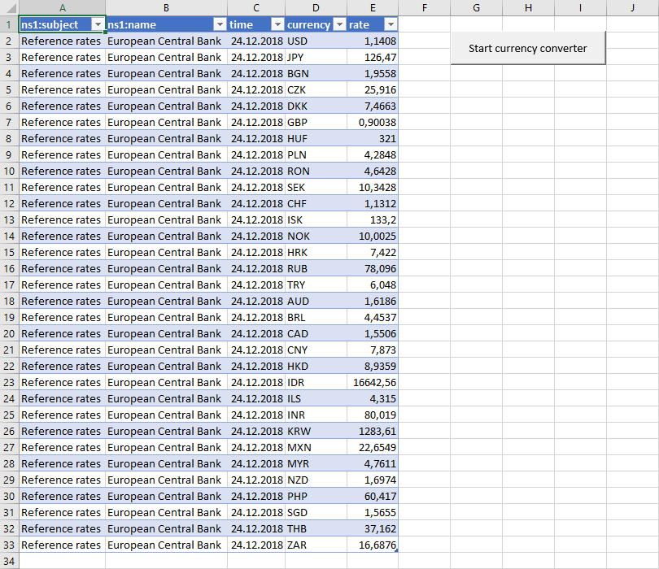
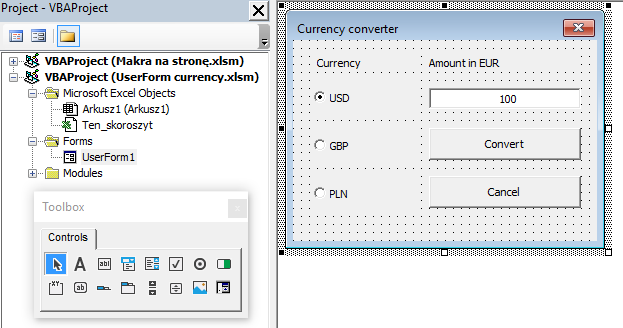
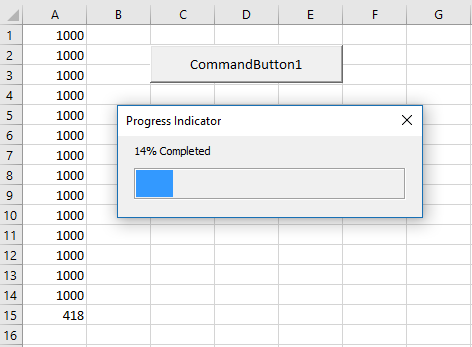
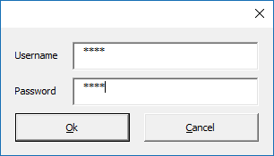
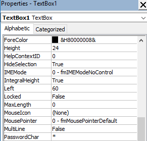
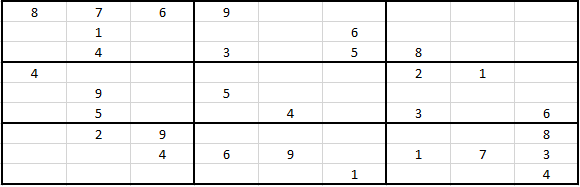
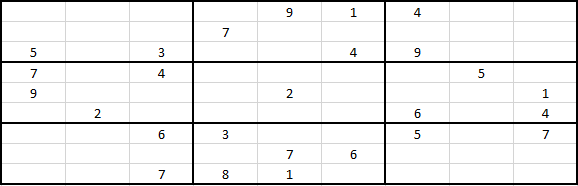
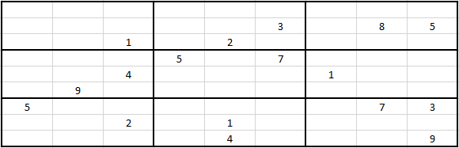

Access
Export from Access 1 oCmd
Enables export from Access to Excel using Command Object.
Sub CommandConn()
On Error GoTo ErrHandler:
Dim oConn As New ADODB.Connection
Dim oCmd As New ADODB.Command
Dim oRs As New ADODB.Recordset
Dim iCols As Long
oCmd.CommandText = "SELECT * FROM Invoice;"
oCmd.CommandType = adCmdText
' Connect to data source
Set oConn = GetNewConnection
oCmd.ActiveConnection = oConn
' Execute SQL command
Set oRs = oCmd.Execute
' Headers
For iCols = 0 To oRs.Fields.Count - 1
Sheets("Access").Cells(11, iCols + 1).Value = oRs.Fields(iCols).Name
Next
' Copy recordset
' MsgBox oRs.RecordCount
Range("A12").CopyFromRecordset oRs
' Clean up
oRs.Close
oConn.Close
Set oRs = Nothing
Set oConn = Nothing
Set oCmd = Nothing
ErrHandler:
' Clean up
If oRs.State = adStateOpen Then
oRs.Close
End If
If oConn.State = adStateOpen Then
oConn.Close
End If
Set oRs = Nothing
Set oConn = Nothing
Set oCmd = Nothing
If Err <> 0 Then
MsgBox Err.Source & "-->" & Err.Description, , "Error"
End If
End Sub
' BeginNewConnection
Private Function GetNewConnection() As ADODB.Connection
Dim oCn As New ADODB.Connection
Dim sConn As String
sConn = "Provider=Microsoft.ACE.OLEDB.12.0; Data Source=C:\Users\admin\GarageMike.accdb;"
oCn.Open sConn
If oCn.State = adStateOpen Then
Set GetNewConnection = oCn
End If
End Function
Export from Access 2 oConn
Enables export from Access to Excel using Connection Object.
Here oRs.Open takes a Connection object (oConn) variable as the value of its ActiveConnection parameter.
Useful link:
Microsoft docs
Sub ObjectConn()
' works:
'Dim oConn As ADODB.Connection
'Dim oRs As ADODB.Recordset
'Set oConn = New ADODB.Connection
'Set oRs = New ADODB.Recordset
Dim oConn As New ADODB.Connection
Dim oRs As New ADODB.Recordset
Dim sConn As String
Dim sSQL As String
Dim iCols As Long
sConn = "Provider=Microsoft.ACE.OLEDB.12.0;" & _
"Data Source=C:\Users\admin\AccessDB.accdb;"
sSQL = "SELECT * FROM Invoice;"
' Connect to data source
oConn.Open sConn
' Execute SQL command
Set oRs = oConn.Execute(sSQL)
' oRs.Open sSQL, oConn, adOpenStatic, adLockBatchOptimistic, adCmdText - works
' Headers
For iCols = 0 To oRs.Fields.Count - 1
Sheets("Access").Cells(1, iCols + 1).Value = oRs.Fields(iCols).Name
Next
' Copy recordset
' MsgBox oRs.RecordCount
Range("A2").CopyFromRecordset oRs
' Clean up
oConn.Close
Set oConn = Nothing
End Sub
Export from Access 3 oRs
Enables export from Access to Excel using Recordset Object.
Recordset.Open can be used to implicitly establish a connection and issue a command over that connection in a single operation.
Notice that oRs.Open takes a connection string (sConn), in place of a Connection object (oConn), as the value of its ActiveConnection parameter. Also the client-side cursor type is enforced by setting the CursorLocation property on the Recordset object.
Useful link:
Microsoft docs
Sub RecordsetConn()
Dim oRs As New ADODB.Recordset
Dim sConn As String
Dim sSQL As String
Dim iCols As Long
sConn = "Provider=Microsoft.ACE.OLEDB.12.0; Data Source=C:\Users\admin\GarageMike.accdb;"
sSQL = "SELECT * FROM Invoice;"
' Connect to data source and execute SQL command
oRs.Open sSQL, sConn, adOpenStatic, adLockBatchOptimistic, adCmdText
' Set oRs = sConn.Execute(sSQL) - won't work
' Headers
For iCols = 0 To oRs.Fields.Count - 1
Sheets("Access").Cells(6, iCols + 1).Value = oRs.Fields(iCols).Name
Next
' Copy recordset
' MsgBox oRs.RecordCount
Range("A7").CopyFromRecordset oRs
' Clean up
oRs.Close
Set oRs = Nothing
End Sub
Export from Access 4 DoCmd
You can use the methods of the DoCmd object to run Microsoft Office Access actions from Visual Basic.
Works with Microsoft Access 16.0 Object Library and Microsoft Office 16.0 Access database engine object library.
Useful links:
Microsoft docs |
Microsoft docs |
Access Excel tips
Sub ExportFromAccess()
Dim acc As Object
Set acc = CreateObject("Access.Application")
With acc
.OpenCurrentDatabase "C:\Users\admin\GarageMike.accdb"
.DoCmd.TransferSpreadsheet acExport, 10, "Vehicles", "C:\Users\admin\test.xlsm", True, "Vehicles"
' Application.ActiveWorkbook.FullName
' 10 = acSpreadsheetTypeExcel12Xml
.CloseCurrentDatabase
.Quit
End With
' Clean up
Set acc = Nothing
End Sub
Last Record Date Check
Informs a user if last record in recordset contains month and year that is equal to current month and year. If yes, notifies user and exits the sub.
Sub LastRecordsetDateCheck()
Dim oRs As New ADODB.Recordset
Dim sConn As String
Dim sSQL As String
sConn = "Provider=Microsoft.ACE.OLEDB.12.0; Data Source=C:\Users\admin\Documents\test.accdb;"
sSQL = "SELECT * FROM Table_Name;"
oRs.CursorLocation = adUseClient
oRs.Open sSQL, sConn, adOpenStatic, adLockBatchOptimistic, adCmdText
If Not (oRs.EOF And oRs.BOF) Then
oRs.MoveLast
If Month(Date) = Month(oRs.Fields("tm_Date")) And _
Year(Date) = Year(oRs.Fields("tm_Date")) Then
MsgBox Format(oRs.Fields("tm_Date"), "mmm-yyyy") & " records already exist in database."
End
End If
Else
MsgBox "There are no records in the recordset."
End If
Set oRs.ActiveConnection = Nothing
oRs.Close
Set oRs = Nothing
End Sub
Loop Through Recordset
Enables export from Access to Excel using Recordset Object and including loop through recordset.
Sub RecordsetConnLoop()
Dim oRs As New ADODB.Recordset
Dim sConn As String
Dim sSQL As String
sConn = "Provider=Microsoft.ACE.OLEDB.12.0; Data Source=C:\Users\admin\GarageMike.accdb;"
sSQL = "SELECT * FROM Vehicles;"
' Create and Open the Recordset object.
oRs.CursorLocation = adUseClient
oRs.Open sSQL, sConn, adOpenStatic, adLockBatchOptimistic, adCmdText
' Does recordset contains rows
If Not (oRs.EOF And oRs.BOF) Then
oRs.MoveFirst
Do Until oRs.EOF = True
Debug.Print oRs.Fields("Vehicle ID") & " " & oRs.Fields("Model")
oRs.MoveNext
Loop
Else
MsgBox "There are no records in the recordset."
End If
' Clean up
Set oRs.ActiveConnection = Nothing
oRs.Close
Set oRs = Nothing
End Sub
Import to Access 1 oRs
Establishes connection with Access database and allows adding, updating and deleting records using recordset.
Useful links:
Microsoft docs
Sub RecordsetConnAddUpdateDelete()
Dim oRs As New ADODB.Recordset
Dim fld As ADODB.Field
Dim sConn As String
Dim sSQL As String
Dim PrintoRs As String
sConn = "Provider=Microsoft.ACE.OLEDB.12.0; Data Source=C:\Users\admin\Documents\db.accdb;"
sSQL = "SELECT * FROM [Publishers];"
' oRs fields
oRs.Open sSQL, sConn, adOpenStatic, adLockOptimistic
Debug.Print oRs.RecordCount
For Each fld In oRs.Fields
Debug.Print fld.Name
Next fld
' oRs values
Do Until oRs.EOF
For Each fld In oRs.Fields
PrintoRs = PrintoRs & fld.Value & " "
Next fld
Debug.Print PrintoRs
PrintoRs = ""
oRs.MoveNext
Loop
oRs.Close
' insert
oRs.Open sSQL, sConn, adOpenStatic, adLockOptimistic
oRs.MoveLast
oRs.AddNew
oRs.Fields("pub_id") = 4545
oRs.Fields("pub_name") = "Gringo Bros."
oRs.Fields("city") = "Warsaw"
oRs.Fields("State") = ""
oRs.Fields("country") = "Poland"
oRs.Update
oRs.Close
' oRs values
oRs.Open sSQL, sConn, adOpenStatic, adLockOptimistic
Do Until oRs.EOF
For Each fld In oRs.Fields
PrintoRs = PrintoRs & fld.Value & " "
Next fld
Debug.Print PrintoRs
PrintoRs = ""
oRs.MoveNext
Loop
oRs.Close
' update
oRs.Open sSQL, sConn, adOpenStatic, adLockOptimistic
oRs.Find ("pub_id = 4545")
oRs.Fields("pub_id") = 9999
oRs.Fields("pub_name") = "Gregory Bros."
oRs.Update
oRs.Close
' oRs values
oRs.Open sSQL, sConn, adOpenStatic, adLockOptimistic
Do Until oRs.EOF
For Each fld In oRs.Fields
PrintoRs = PrintoRs & fld.Value & " "
Next fld
Debug.Print PrintoRs
PrintoRs = ""
oRs.MoveNext
Loop
oRs.Close
' delete
oRs.Open sSQL, sConn, adOpenStatic, adLockOptimistic
oRs.Find ("pub_name = 'Gregory Bros.'")
oRs.Delete
oRs.Close
' oRs values
oRs.Open sSQL, sConn, adOpenStatic, adLockOptimistic
Do Until oRs.EOF
For Each fld In oRs.Fields
PrintoRs = PrintoRs & fld.Value & " "
Next fld
Debug.Print PrintoRs
PrintoRs = ""
oRs.MoveNext
Loop
' Disconnect the Recordset
oRs.Close
Set oRs.ActiveConnection = Nothing
Set oRs = Nothing
End Sub
Import to Access 2 Sql
Connect to Access and insert, update and delete records using SQL queries.
Sub ObjectConnSQLInsertUpdateDelete()
Dim oConn As New ADODB.Connection
Dim oRs As ADODB.Recordset
Dim sConn As String
Dim sSQL As String
Dim source1 As String
Dim source2 As String
Dim source3 As String
'Source
source1 = ThisWorkbook.Sheets("Access").Range("A16")
source2 = ThisWorkbook.Sheets("Access").Range("B16")
source3 = ThisWorkbook.Sheets("Access").Range("C16")
sConn = "Provider=Microsoft.ACE.OLEDB.12.0; Data Source=C:\Users\admin\db.accdb;"
' Connect to data source
oConn.Open sConn
' Count query
sSQL = "SELECT COUNT(ID) AS num FROM EMPLOYEE"
Set oRs = oConn.Execute(sSQL)
Debug.Print (oRs!num)
' Insert query
sSQL = "INSERT INTO Employee (ID, [Last Name], [First Name]) VALUES ('" & source1 & "', '" & source2 & "', '" & source3 & "')"
'Set oRs = New ADODB.Recordset
Set oRs = oConn.Execute(sSQL)
' Update query
sSQL = "UPDATE Employee SET [Last Name] = '" & "Jones" & "', [First Name] = '" & "Papa" & "' WHERE ID = 3"
Set oRs = oConn.Execute(sSQL)
' Delete query
sSQL = "DELETE FROM Employee WHERE [Last Name] = '" & "Jones" & "'"
Set oRs = oConn.Execute(sSQL)
oConn.Close
' Clean up
Set oRs = Nothing
Set oConn = Nothing
End Sub
Import to Access 3 DoCmd
You can use the methods of the DoCmd object to run Microsoft Office Access actions from Visual Basic.
Useful links:
Microsoft docs |
Microsoft docs |
Access Excel tips
Sub ImportToAccess()
Dim acc As Object
Set acc = CreateObject("Access.Application")
With acc
.OpenCurrentDatabase "C:\Users\admin\Documents\db.accdb"
.DoCmd.TransferSpreadsheet acImport, 10, "Vehicles", "C:\Users\admin\Desktop\Makra na stronę.xlsm", True, "Access!J8:Q9"
' Application.ActiveWorkbook.FullName
' 10 = acSpreadsheetTypeExcel12Xml
.CloseCurrentDatabase
.Quit
End With
' Clean up
Set acc = Nothing
End Sub
MS Sql Server
Import from MS Sql Server
Connects to MS Sql Server database and imports data to Excel.
Sub ObjectConnMsSqlServer()
Dim oConn As New ADODB.Connection
Dim oRs As New ADODB.Recordset
Dim sConn As String
Dim sSQL As String
sConn = "Provider=SQLOLEDB;Data Source=.\SQLEXPRESS;Initial Catalog=NORTHWIND;" & _
"Integrated Security=SSPI"
sSQL = "SELECT * FROM Employees;"
' Connect to data source
oConn.Open sConn
' Execute SQL command
Set oRs = oConn.Execute(sSQL)
' Headers
For iCols = 0 To oRs.Fields.Count - 1
Sheets("MS_SQL_server").Cells(1, iCols + 1).Value = oRs.Fields(iCols).Name
Next
' Copy recordset
' MsgBox oRs.RecordCount
Sheets("MS_SQL_server").Range("A2").CopyFromRecordset oRs
' Clean up
oConn.Close
Set oConn = Nothing
End Sub
Oracle
Import from Oracle
Connects to Oracle database and imports data to Excel.
' Other Connections:
'sConn = "Provider=OraOLEDB.Oracle;dbq=localhost:1521/XE;Database=XE;User Id=hr;Password=hr;"
'sConn = "Provider=OraOLEDB.Oracle;Data Source=(DESCRIPTION=(ADDRESS=(PROTOCOL=TCP)_
(Host=localhost)(Port=1521))(CONNECT_DATA=(SERVICE_NAME=XE)));User Id=hr;Password=hr;"
Sub ObjectConnOracle()
Dim oConn As New ADODB.Connection
Dim oRs As New ADODB.Recordset
Dim sConn As String
Dim sSQL As String
sConn = "Provider=OraOLEDB.Oracle;Data Source=XE;User Id=hr;Password=hr;"
sSQL = "SELECT * FROM Employees;"
' Connect to data source
oConn.Open sConn
' Execute SQL command
oRs.Open sSQL, oConn, adOpenStatic, adLockBatchOptimistic, adCmdText
' Headers
For iCols = 0 To oRs.Fields.Count - 1
Sheets("SQL_Oracle").Cells(1, iCols + 1).Value = oRs.Fields(iCols).Name
Next
' Copy recordset
Sheets("SQL_Oracle").Range("A2").CopyFromRecordset oRs
' Clean up
oConn.Close
Set oConn = Nothing
End Sub
Sql in Excel
SQL query in Excel table
Enables extract of data from Excel table using SQL query.
Useful link:
Analyst Cave
Sub SqlinExcel()
Dim oConn As Object
Dim oRs As Object
Dim output As String
Dim sSQL As String
' Connect to data source
Set oConn = CreateObject("ADODB.Connection")
With oConn
.Provider = "Microsoft.ACE.OLEDB.12.0"
.ConnectionString = "Data Source=" & ThisWorkbook.Path & "\" & ThisWorkbook.Name & ";" & _
"Extended Properties=""Excel 12.0 Xml;HDR=YES"";"
.Open
End With
' Execute SQL command
sSQL = "SELECT * FROM [SQL_in_Excel$] WHERE Age > 35"
Set oRs = oConn.Execute(sSQL)
Do Until oRs.EOF
'output = output & oRs(0) & ";" & oRs(1) & ";" & oRs(2) & vbNewLine
Debug.Print oRs(0); ";" & oRs(1) & ";" & oRs(2)
oRs.MoveNext
Loop
' MsgBox output
' Clean up
oRs.Close
Set oRs = Nothing
oConn.Close
Set oConn = Nothing
End Sub
SQL query in Excel tables
Enables extract of data from Excel table using inner join SQL query.
Sub SqlinExcelInnerJoin()
Dim oConn As Object
Dim oRs As Object
Dim sSQL As String
' Connect to data source
Set oConn = CreateObject("ADODB.Connection")
With oConn
.Provider = "Microsoft.ACE.OLEDB.12.0"
.ConnectionString = "Data Source=" & ThisWorkbook.Path & "\" & ThisWorkbook.Name & ";" & _
"Extended Properties=""Excel 12.0 Xml;HDR=YES"";"
.Open
End With
' Execute SQL command
sSQL = "SELECT [SQL_in_Excel$].Age, [SQL_in_Excel_inner$].Nationality FROM [SQL_in_Excel$]" & _
"INNER JOIN [SQL_in_Excel_inner$] ON ([SQL_in_Excel$].Last = [SQL_in_Excel_inner$].Last)" & _
"WHERE [SQL_in_Excel$].Age > 35 AND [SQL_in_Excel_inner$].Nationality = 'British'"
Set oRs = oConn.Execute(sSQL)
Do Until oRs.EOF
Debug.Print oRs("Age") & ";" & oRs("Nationality")
' or oRs.Fields.Item("Age") or oRs.Fields("Age")
oRs.MoveNext
Loop
' Clean up
oRs.Close
Set oRs = Nothing
oConn.Close
Set oConn = Nothing
End Sub
Outlook
Create mail early binding
Sub CreateMail_eb()
Dim objEmail As Outlook.MailItem
Set objEmail = Outlook.Application.CreateItem(olMailItem)
With objEmail
.To = "sampleRecipient@sample.com ; sampleRecipient2@sample.com"
.CC = "sampleRecipient3@sample.com"
.BCC = "sampleRecipient4@sample.com"
.Subject = "This is a test message"
.BodyFormat = 2
.HTMLBody = "Hi,How are you?"
.Attachments.Add ("C:\Users\admin\Documents\test.txt")
.Importance = 2
.ReadReceiptRequested = True
.Display ' or .Send
End With
Set objEmail = Nothing
End Sub
Create mail late binding
Prepares mail in Outlook by creating Outlook objects.
Sub CreateMail_lb()
Dim objOutlook As Object
Dim objEmail As Object
Set objOutlook = CreateObject("Outlook.Application")
Set objEmail = objOutlook.CreateItem(olMailItem)
With objEmail
.To = "sampleRecipient@sample.com ; sampleRecipient2@sample.com"
.CC = "sampleRecipient3@sample.com"
.BCC = "sampleRecipient4@sample.com"
.Subject = "This is a test message"
.BodyFormat = 2
.HTMLBody = "Hi, How are you?"
.Attachments.Add ("C:\Users\admin\Documents\test.txt")
.Importance = 2
.ReadReceiptRequested = True
.Display ' or .Send
End With
Set objEmail = Nothing
Set objOutlook = Nothing
End Sub
Mail incl. range and signature
Prepares mail in Outlook. Body of e-mail is prepared using HTML language. Table is inserted into body. Macro also adds sender's signature.
Useful links:
Ron de Bruin 1st link |
Ron de Bruin 2nd link
Sub CreateMail_html()
Dim objOutlook As Object
Dim objEmail As Object
Dim sd As Worksheet
Dim strbody As String
Dim SigString As String
Dim Signature As String
Dim rng As Range
Set sh = ThisWorkbook.Worksheets("Outlook")
Set rng = sh.Range("E10:F14").SpecialCells(xlCellTypeVisible)
Set objOutlook = CreateObject("Outlook.Application")
Set objEmail = objOutlook.CreateItem(olMailItem)
strbody = "<p style=font-size:11pt;font-family:Calibri>" & sh.Range("B10").Text & "</p>" _
& "<p style=font-size:11pt;font-family:Calibri>" & sh.Range("B11").Text & "<b>" & _
sh.Range("B12").Text & "</b>" & sh.Range("B13").Text & "<br>" & sh.Range("B14").Text & "</p>"
SigString = Environ("appdata") & "\Microsoft\Signatures\Signature.htm"
If Dir(SigString) <> "" Then
Signature = GetBoiler(SigString)
Else
Signature = ""
End If
On Error Resume Next
With objEmail
.To = sh.Range("A10").Text
.CC = sh.Range("A11").Text
.Subject = sh.Range("A12").Text
.BodyFormat = olFormatHTML
.HTMLBody = "<html><head></head><body>" & strbody & RangetoHTML(rng) & "<br>" & Signature & "<body></html>"
.Display
End With
Set objEmail = Nothing
Set objOutlook = Nothing
End Sub
Function GetBoiler(ByVal sFile As String) As String
'Dick Kusleika
Dim fso As Object
Dim ts As Object
Set fso = CreateObject("Scripting.FileSystemObject")
Set ts = fso.GetFile(sFile).OpenAsTextStream(1, -2)
GetBoiler = ts.readall
ts.Close
End Function
Function RangetoHTML(rng As Range)
' Changed by Ron de Bruin 28-Oct-2006
' Working in Office 2000-2016
Dim fso As Object
Dim ts As Object
Dim TempFile As String
Dim TempWB As Workbook
TempFile = Environ$("temp") & "\" & Format(Now, "dd-mm-yy h-mm-ss") & ".htm"
'Copy the range and create a new workbook to past the data in
rng.Copy
Set TempWB = Workbooks.Add(1)
With TempWB.Sheets(1)
.Cells(1).PasteSpecial Paste:=8
.Cells(1).PasteSpecial xlPasteValues, , False, False
.Cells(1).PasteSpecial xlPasteFormats, , False, False
.Cells(1).Select
Application.CutCopyMode = False
On Error Resume Next
.DrawingObjects.Visible = True
.DrawingObjects.Delete
On Error GoTo 0
End With
'Publish the sheet to a htm file
With TempWB.PublishObjects.Add( _
SourceType:=xlSourceRange, _
Filename:=TempFile, _
Sheet:=TempWB.Sheets(1).Name, _
Source:=TempWB.Sheets(1).UsedRange.Address, _
HtmlType:=xlHtmlStatic)
.Publish (True)
End With
'Read all data from the htm file into RangetoHTML
Set fso = CreateObject("Scripting.FileSystemObject")
Set ts = fso.GetFile(TempFile).OpenAsTextStream(1, -2)
RangetoHTML = ts.readall
ts.Close
RangetoHTML = Replace(RangetoHTML, "align=center x:publishsource=", _
"align=left x:publishsource=")
'Close TempWB
RangetoHTML = Replace(RangetoHTML, "align=center x:publishsource=", _
"align=left x:publishsource=")
TempWB.Close savechanges:=False
'Delete the htm file we used in this function
Kill TempFile
Set ts = Nothing
Set fso = Nothing
Set TempWB = Nothing
End Function
Create many mails
Prepares many mails in Outlook by creating Outlook objects.
Sub CreateMails()
'SET Outlook APPLICATION OBJECT.
Dim objOutlook As Object
Set objOutlook = CreateObject("Outlook.Application")
Dim i, lrow As Integer
lrow = Cells(Rows.Count, "A").End(xlUp).Row
For i = 1 To lrow
'CREATE EMAIL OBJECT
Dim objEmail As Object
Set objEmail = objOutlook.CreateItem(olMailItem)
With objEmail
.To = Range("A" & i).Value
.Subject = Range("B1").Value
.Body = Range("C" & i).Value
.Display 'DISPLAY MESSAGE
End With
Next i
' CLEAR
Set objEmail = Nothing
Set objOutlook = Nothing
End Sub
Get Outlook data
Extracts data from Outlook mail.
Sub GetOutlookData()
Dim olNs As Object
Dim olFolder As Object
Dim olItem As Object
Dim i As Integer
Dim objOutlook As Object
Set objOutlook = GetObject(, "Outlook.Application") ' or CreateObject("Outlook.Application")
Set olNs = objOutlook.GetNamespace("MAPI")
Set olFolder = olNs.GetDefaultFolder(6) ' 6 equals to Inbox
Set olFolder = olFolder.Folders("temp")
ThisWorkbook.Sheets("Outlook").Range("E1:H1") = _
Array("Sender Email Address:", "Subject:", "To:", "Sent On:")
For i = 1 To olFolder.Items.Count
ThisWorkbook.Sheets("Outlook").Cells(i + 1, 5) = olFolder.Items.Item(i).SenderEmailAddress
ThisWorkbook.Sheets("Outlook").Cells(i + 1, 6) = olFolder.Items.Item(i).Subject
ThisWorkbook.Sheets("Outlook").Cells(i + 1, 7) = olFolder.Items.Item(i).To
ThisWorkbook.Sheets("Outlook").Cells(i + 1, 8) = olFolder.Items.Item(i).SentOn
Next i
End Sub
Get Outlook data conditions
Extracts data from Outlook mail using various conditions.
Sub GetOutlookDataConditions()
Dim olNs As Object
Dim olFolder As Object
Dim i As Integer
Dim x As Integer
Dim objOutlook As Object
Shell ("OUTLOOK")
Application.Wait (Now + TimeValue("00:00:10")) ' waiting until Outlook is open
Set objOutlook = CreateObject("Outlook.Application")
Set olNs = objOutlook.GetNamespace("MAPI")
Set olFolder = olNs.GetDefaultFolder(6) ' 6 equals to Inbox
Set olFolder = olFolder.Folders("temp")
ThisWorkbook.Sheets("Outlook").Range("J1:M1") = _
Array("Sender Email Address:", "Subject:", "To:", "Sent On:")
For i = 1 To olFolder.Items.Count
If olFolder.Items.Item(i).Subject = "Faktura nr F/007726/18" And _
DateSerial(Year(olFolder.Items.Item(i).ReceivedTime), _
Month(olFolder.Items.Item(i).ReceivedTime), Day(olFolder.Items.Item(i).ReceivedTime)) = _
"07.08.2018" Then
ThisWorkbook.Sheets("Outlook").Cells(x + 2, 10) = olFolder.Items.Item(i).SenderEmailAddress
ThisWorkbook.Sheets("Outlook").Cells(x + 2, 11) = olFolder.Items.Item(i).Subject
ThisWorkbook.Sheets("Outlook").Cells(x + 2, 12) = olFolder.Items.Item(i).To
ThisWorkbook.Sheets("Outlook").Cells(x + 2, 13) = olFolder.Items.Item(i).SentOn
x = x + 1
End If
Next i
objOutlook.Quit
End Sub
Get Outlook attachments
Retrieves Outlook attachments.
Useful link:
VBA Express
Sub GetOutlookAttachments()
Dim objOutlook As Object
Dim Ns As Object
Dim olFolder As Outlook.MAPIFolder
Dim Item As Object
Dim Atmt As Outlook.Attachment
Set Ns = GetNamespace("MAPI")
Set olFolder = Ns.GetDefaultFolder(olFolderInbox).Folders("temp")
For Each Item In olFolder.Items
Debug.Print Item.Subject
For Each Atmt In Item.Attachments
Debug.Print Atmt.FileName
Next Atmt
Next Item
End Sub
Reply All early binding
Replies to all using early binding. Microsoft Outlook 16.0 Object Library has to be loaded.
Sub MailReplyAll_eb()
Dim olItem As Outlook.MailItem
Dim olReply As Outlook.MailItem
Dim olNs As Outlook.Namespace
Dim olFolder As Outlook.MAPIFolder
Set olNs = Outlook.GetNamespace("MAPI")
Set olFolder = olNs.GetDefaultFolder(6)
Set olFolder = olFolder.Folders("temp")
For Each olItem In olFolder.Items
If InStr(olItem.Subject, "mail subject") <> 0 Then
Set olReply = olItem.ReplyAll
With olReply
.HTMLBody = "Hello, thank you. " & vbCrLf & olReply.HTMLBody
.Display
End With
End If
Next olItem
Set olItem = Nothing
End Sub
Reply All late binding
Replies to all using late binding.
Sub MailReplyAll_lb()
Dim objOutlook As Object
Dim olItem As Object
Dim olReply As Object
Dim olNs As Object
Dim olFolder As Object
Set objOutlook = CreateObject("Outlook.Application")
Set olItem = objOutlook.CreateItem(olMailItem)
Set olReply = objOutlook.CreateItem(olMailItem)
Set olNs = objOutlook.GetNamespace("MAPI")
Set olFolder = olNs.GetDefaultFolder(6)
Set olFolder = olFolder.Folders("temp")
For Each olItem In olFolder.Items
If InStr(olItem.Subject, "mail subject") <> 0 Then
Set olReply = olItem.ReplyAll
With olReply
.HTMLBody = "Hello, thank you. " & vbCrLf & olReply.HTMLBody
.Display
End With
End If
Next olItem
Set olItem = Nothing
Power Point
Copy from Excel to PowerPoint
Sub CopyToPowerPoint()
Dim PowerPointApp As Object
Dim myPresentation As Object
Dim mySlide As Object
Dim myShape As Object
Dim fileNameString As String
If PowerPointApp Is Nothing Then _
Set PowerPointApp = CreateObject(class:="PowerPoint.Application")
On Error GoTo 0
fileNameString = "C:\Users\admin\file.pptx"
Set myPresentation = PowerPointApp.Presentations.Open(FileName:=fileNameString)
' .Add
Set mySlide = myPresentation.Slides(1)
' .Slides.Add(1)
'Chart
Worksheets("PowerPoint").ChartObjects("Chart").Chart.ChartArea.Copy
' ActiveChart.ChartArea.Copy
mySlide.Shapes.Paste
Set myShape = mySlide.Shapes(mySlide.Shapes.Count)
myShape.Left = 20
myShape.Top = 300
'Table
Worksheets("PowerPoint").ListObjects("Table").Range.Copy
mySlide.Shapes.Paste
Set myShape = mySlide.Shapes(mySlide.Shapes.Count)
myShape.Left = 100
myShape.Top = 100
'Header
With mySlide
' (Orientation, Left, Top, Width, Height)
Set shpCurrShape = .Shapes.AddTextbox(1, 20, 20, 500, 30.1)
With shpCurrShape
With .TextFrame.TextRange
.Text = Worksheets("PowerPoint").Range("A1").Text
.ParagraphFormat.Alignment = 1
With .Font
.Bold = msoTrue
.Name = "Arial"
.Size = 24
.Color = RGB(0, 0, 0)
End With
End With
End With
End With
PowerPointApp.Visible = True
PowerPointApp.Activate
'Save file
myPresentation.SaveCopyAs ("C:\Users\admin\filecopy.pptx")
'Close
PowerPointApp.Quit
Set PowerPointApp = Nothing
End Sub
Chart to string/array
Converts chart series and values to string/array values.
Sub ChartToString()
Dim ws As Worksheet
Dim myChartObject As ChartObject
Dim mySrs As Series
For Each ws In ActiveWorkbook.Worksheets
For Each myChartObject In ws.ChartObjects
For Each mySrs In myChartObject.Chart.SeriesCollection
mySrs.XValues = mySrs.XValues
mySrs.Values = mySrs.Values
mySrs.Name = mySrs.Name
Next
Next
Next
End Sub
Add to chart
Adds new chart series and values.
Sub AddToChart()
ActiveSheet.ChartObjects("Chart").Activate
With ActiveChart
.SeriesCollection.NewSeries
.SeriesCollection(2).Name = Range("C1")
.SeriesCollection(2).Values = Range("C2:C4")
.SeriesCollection(2).XValues = Range("A2:A4")
End With
End Sub
Sharepoint
Sharepoint file upload
Uploads file to Sharepoint.
Connect to Sharepoint using DavWWWRoot. It is a special keyword recognized by Windows Shell and is used by the Mini-redirector instead of the folder name, to indicate server root.
How to find "DavWWWRoot address"?
In Sharepoint go to LIBRARY tab and select Open with Explorer. Right click File - Properties and copy address next to Location.
Sub SharepointUploadFile()
Dim SharepointAddress As String
Dim LocalAddress As String
SharepointAddress = "\\example.net@SSL\DavWWWRoot\site\example\"
LocalAddress = "C:\Users\admin\Dekstop\test.xlsx"
Dim objNet As Object
Dim fs As Object
Set objNet = CreateObject("WScript.Network")
Set fs = CreateObject("Scripting.FileSystemObject")
If fs.FileExists(LocalAddress) Then
fs.CopyFile LocalAddress, SharepointAddress
End If
Set objNet = Nothing
Set fs = Nothing
End Sub
Open file on SP early binding
Opens Sharepoint file. Allows file modification and close.
For code to work in Tools - References tick "Microsoft Scripting Runtime".
Useful link:
Excel trick
Sub SharepointOpenFile()
Dim fd As folder
Dim fl As File
Dim fs As FileSystemObject
Dim wb As Workbook
Set fd = fs.GetFolder("\\example.net@SSL\DavWWWRoot\site\example\")
For Each fl In fd.Files
If fl.Name = "test.xlsx" Then
Set wb = Workbooks.Open(f)
wb.Sheets(1).Range("C1").Value = "test"
wb.Close , SaveChanges = False
End If
Next fl
End Sub
Open file on SP late binding
Opens Sharepoint file. Allows file modification and close.
For code to work in Tools - References tick "Microsoft Scripting Runtime".
Useful link:
Excel trick
Sub SharepointOpenFile()
Dim fd As Object
Dim fl As Variant
Dim wb As Workbook
Set fs = CreateObject("Scripting.FileSystemObject")
Set fd = fs.GetFolder("\\example.net@SSL\DavWWWRoot\site\example\")
For Each fl In fd.Files
If fl.Name = "test.xlsx" Then
Set wb = Workbooks.Open(f)
wb.Sheets(1).Range("C1").Value = "test"
wb.Close , SaveChanges = False
End If
Next fl
End Sub
Copy file from Sharepoint
Creates a copy of Sharepoint file on local computer.
Sub SharepointSaveFileCopy()
Dim fd As folder
Dim fl As File
Dim fs As FileSystemObject
Dim wb As Workbook
Set fd = fs.GetFolder("\\example.net@SSL\DavWWWRoot\site\example\")
For Each fl In fd.Files
If fl.Name = "test.xlsx" Then
Set wb = Workbooks.Open(f)
wb.SaveCopyAs "C:\Users\admin\Dekstop\testcopy.xlsx"
wb.Close , SaveChanges = False
End If
Next fl
End Sub
Sharepoint Get List
Copies Sharepoint list's items into Excel's worksheet.
Enable ActiveX Data Objects in Tools - References
To find out URL of website right-click any item from the list and copy all Address (URL) until "listform".
To find GUID of a LIST after Nick Grattan's advice:
- Navigate to the SharePoint list using the browser.
- Select the Settings + List Settings menu command.
- Copy the Url from the browser address bar into Notepad. It will look something like:
- http://moss2007/ProjectX/_layouts/listedit.aspx?List=%7B26534EF9%2DAB3A%2D46E0%2DAE56%2DEFF168BE562F%7D
- Delete everying before and including "List=".
- Change "%7B" to "{"
- Change all "%2D" to "-"
- Chnage "%7D" to "}"
- You are now left with the Id: {26534EF9-AB3A-46E0-AE56-EFF168BE562F}
Useful link:
Nick Grattan's blog
Sub SharepointGetList()
Dim cn As ADODB.Connection
Dim rs As ADODB.Recordset
Dim sConn As String
Dim sSQL As String
' DATABASE is site url and LIST is GUID of your list
sConn = "Provider=Microsoft.ACE.OLEDB.12.0;WSS;IMEX=1;RetrieveIds=Yes;DATABASE=https://example/;LIST={example};"
Set cn = New ADODB.Connection
Set rs = New ADODB.Recordset
With cn
.ConnectionString = sConn
.Open
End With
sSQL = "SELECT * FROM [Table Name];"
rs.Open sSQL, cn, adOpenStatic, adLockOptimistic
ThisWorkbook.Worksheets("Sheet1").Range("A1").CopyFromRecordset rs
End Sub
Notepad
Import to array
Imports data from txt file to Excel array.
Sub ImporttoArray()
Dim myArray() As Variant
Dim g As Double
Open "C:\Users\admin\file.txt" For Input As #1
Do While Not EOF(1)
ReDim Preserve myArray(g)
Line Input #1, myArray(g)
'Debug.Print myArray(g)
g = g + 1
Loop
Close #1
End Sub
Import to Excel file
Imports data from txt file to Excel file.
Useful link:
Excel macro mastery
Sub ImportToExcel()
Dim wb As Workbook
Dim ws As Worksheet
Set wb = Workbooks.Open("C:\Users\admin\file.txt")
Set ws = ThisWorkbook.Sheets("txt")
wb.Sheets(1).Cells.Copy ws.Cells
wb.Close savechanges:=False
End Sub
Export to txt file
Exports data from Excel to txt file.
Useful link:
stackoverflow
Sub ExportTotxtFile()
Dim txtfile As Integer
txtfile = FreeFile()
Open "C:\Users\admin\file.txt" For Output As #txtfile
For i = 1 To 3
Print #txtfile, Range("A" & i) ' write to file
Next
Close #txtfile
End Sub
Export array to txt file
Exports array from Excel to txt file.
Useful link:
stackoverflow
Sub ExportArrayTortxtFile()
Dim txtfile As Integer
txtfile = FreeFile()
Open "C:\Users\admin\file.txt" For Output As #txtfile
Dim myArray As Variant
myArray = Array("Anna", "Piotr", "Stanisław")
For i = 0 To 2
Print #txtfile, myArray(i) ' write to file
Next
Close #txtfile
End Sub
PDF SaveAs Print
Save Range as PDF
Saves a selected range as PDF.
Sub SaveRangeAsPDF()
Selection.ExportAsFixedFormat Type:=xlTypePDF, OpenAfterPublish:=True
End Sub
Save Ws as PDF
Saves the active worksheet as a PDF.
Sub SaveWsAsPDF()
ActiveSheet.ExportAsFixedFormat Type:=xlTypePDF, OpenAfterPublish:=True
End Sub
Save as PDF change printer
Saves as PDF. Changes default printer to avoid page size problem cause by postscript printers.
Useful link:
Excel off the grid
Function FindPrinter:
written: November 28, 2009
author: Leith Ross
summary: Finds a printer by name and returns the printer's name and port number
Works with Windows 2000 and up
Useful link:
Excel Forum
Sub SaveAsPDF()
' Default Printer
Dim Printer As String
Printer = Application.ActivePrinter
'Temporary Printer
Printer = FindPrinter("Microsoft Print to PDF")
ThisWorkbook.Sheets(Array("Outlook", "Access")).Select
ActiveSheet.ExportAsFixedFormat Type:=xlTypePDF, FileName:=ThisWorkbook.Path & "\" & _
"test.pdf", Quality:=xlQualityStandard, IncludeDocProperties:=True, IgnorePrintAreas:=False, _
OpenAfterPublish:=False
' Default printer restored
Printer = Application.ActivePrinter
End Sub
Function FindPrinter(ByVal PrinterName As String) As String
Dim Arr As Variant
Dim Device As Variant
Dim Devices As Variant
Dim Printer As String
Dim RegObj As Object
Dim RegValue As String
Const HKEY_CURRENT_USER = &H80000001
Set RegObj = GetObject("winmgmts:{impersonationLevel=impersonate}!\\.\root\default:StdRegProv")
RegObj.enumvalues HKEY_CURRENT_USER, "Software\Microsoft\Windows NT\CurrentVersion\Devices", _
Devices, Arr
For Each Device In Devices
RegObj.getstringvalue HKEY_CURRENT_USER, _
"Software\Microsoft\Windows NT\CurrentVersion\Devices", Device, RegValue
Printer = Device & " on " & Split(RegValue, ",")(1)
If InStr(1, Printer, PrinterName, vbTextCompare) > 0 Then
FindPrinter = Printer
Exit Function
End If
Next
End Function
Save File Copy
Creates a copy of your file. The copy is created in the location of your original file. Its name will contain today's date.
Sub SaveFileCopy()
ActiveWorkbook.SaveCopyAs ActiveWorkbook.Path & "\" & Date & " Copy of " & ActiveWorkbook.Name
End Sub
Save xlsm as xlsx
Workaround to save xlsm as xlsx file.
Sub SavexlsmAsxlsx()
Application.ScreenUpdating = False
Application.DisplayAlerts = False
Dim wb As Workbook
Dim wb_new As Workbook
Dim wbpath As String
Set wb = ThisWorkbook
wbpath = wb.Path
Debug.Print wbpath
wb.SaveCopyAs Filename:=wbpath & "\temporary.xlsm"
Workbooks.Open Filename:=wbpath & "\temporary.xlsm"
Set wb_new = ActiveWorkbook
With wb_new
.SaveAs Filename:=wbpath & "\copy.xlsx", FileFormat:=xlOpenXMLWorkbook
.Close savechanges:=False
End With
On Error Resume Next
Kill wbpath & "\temporary.xlsm"
Application.ScreenUpdating = True
Application.DisplayAlerts = True
End Sub
Last Author Save Time
The macro identifies the last author and save date.
Sub LastAuthorSaveTime()
Dim FileAuthor As Object
Set FileAuthor = ThisWorkbook.BuiltinDocumentProperties("Last Author")
Dim FileDate As Object
Set FileDate = ThisWorkbook.BuiltinDocumentProperties("Last Save Time")
MsgBox "Last Updated By: " & FileAuthor & " on " & FileDate
End Sub
Save as new Wb
Sets a new worbbook and saves a copy.
Useful link:
Microsoft docs
Sub SaveAsNewwb()
Dim NewBook As Workbook
Dim fName As Variant
Set NewBook = Workbooks.Add
Do
fName = Application.GetSaveAsFilename(fileFilter:="Excel (*.xlsx), *.xlsx")
Loop Until fName <> False
NewBook.SaveAs FileName:=fName
NewBook.Close savechanges = False
End Sub
Print Sheet
Prints the active worksheet.
Sub PrintSheet()
ActiveSheet.PrintOut
End Sub
Print Pages Copies
Prints the active worksheet. You should specify page(s) and number of copies.
Sub PrintPagesCopies()
PageFrom = InputBox("From page")
PageTo = InputBox("To page")
CopiesNr = InputBox("Number of copies")
ActiveSheet.PrintOut From:=PageFrom, To:=PageTo, Copies:=CopiesNr
End Sub
File Properties
Open File Dialog
Displays a Dialog Box that allows to select a single file.
Useful link:
Chicago computer classes
Sub OpenFileDialog()
Dim fullpath As String
With Application.FileDialog(msoFileDialogFilePicker)
.AllowMultiSelect = False
.Filters.Add "Excel Files", "*.xlsx; *.xlsm; *.xls; *.xlsb", 1
.Show
fullpath = .SelectedItems.Item(1)
End With
Workbooks.Open fullpath
Debug.Print ActiveWorkbook.FullName
Debug.Print ActiveWorkbook.Path
Debug.Print ActiveWorkbook.Name
End Sub
Get list of Files
Retrieves file properties.
Useful link:
Technet
Sub GetListofFiles()
Dim objFSO As Object
Dim objFolder As Object
Dim objFile As Object
Dim i As Integer
Set objFSO = CreateObject("Scripting.FileSystemObject")
Set objFolder = objFSO.GetFolder("C:\Users\admin\Nauka")
i = 0
For Each objFile In objFolder.Files
Cells(i + 1, 1) = objFile.Name
Cells(i + 1, 2) = objFile.Path
i = i + 1
Next objFile
Set objFSO = Nothing
Set objFolder = Nothing
Set objFile = Nothing
End Sub
Get list of Folders
Retrieves folder properties.
Sub GetListofFolders()
Dim objFSO As Object
Dim objFolder As Object
Dim objSubFolder As Object
Dim i As Integer
Set objFSO = CreateObject("Scripting.FileSystemObject")
Set objFolder = objFSO.GetFolder("C:\Users\admin\Nauka")
i = 0
For Each objSubFolder In objFolder.SubFolders
Cells(i + 1, 10) = objSubFolder.Name
Cells(i + 1, 11) = objSubFolder.Path
i = i + 1
Next objSubFolder
Set objFSO = Nothing
Set objFolder = Nothing
Set objSubFolder = Nothing
End Sub
UserForms
Currency Converter
UserForm that enables selecting one out of three currencies and convert typed amount to EUR. Currency rates from European Central Bank.
Open ECB's website:
ECB's currency rates
Scroll down and open Current reference rates in XML format.
In Excel select Data tab -> From Web (Classic Mode) and type ECB's website address. Currency rates should appear as table in Excel sheet.
Next, create a button that you will later connect to StartConverter sub.

Design UserForm1 as in the picture.

Microsoft Excel Objects -> ThisWorkbook
This code refreshes currency rates every time Excel is open.
Private Sub Workbook_Open()
ThisWorkbook.RefreshAll
End Sub
Forms -> UserForm1 -> Cancel button
Private Sub Cancel_Click()
Unload UserForm1
End Sub
Forms -> UserForm1 -> Convert button
Private Sub Convert_Click()
Dim curFound As Range
Dim curRate As Double
Dim curAmount As Double
If obUSD Then
Set curFound = Range("D:D").Find("USD")
curRate = curFound.Offset(0, 1).Value
curAmount = Round(curRate * tbAmount, 2)
MsgBox tbAmount & " EUR is " & curAmount & " USD"
End If
If obGBP Then
Set curFound = Range("D:D").Find("GBP")
curRate = curFound.Offset(0, 1).Value
curAmount = Round(curRate * tbAmount, 2)
MsgBox tbAmount & " EUR is " & curAmount & " GBP"
End If
If obPLN Then
Set curFound = Range("D:D").Find("PLN")
curRate = curFound.Offset(0, 1).Value
curAmount = Round(curRate * tbAmount, 2)
MsgBox tbAmount & " EUR is " & curAmount & " PLN"
End If
End Sub
Private Sub UserForm_Initialize()
Me.tbAmount.Text = 100
End Sub
Modules -> Module1
Sub StartConverter()
UserForm1.Show
End Sub
Progress Bar
UserForm shows the progress while code runs.
Code coming from the following website:
excel-easy

Create CommandButton1 and assign private sub to it. Paste the following pieces of code into:
Microsoft Excel Objects -> Sheet1
Private Sub CommandButton1_Click()
UserForm1.Show
End Sub
Forms -> UserForm1
Private Sub UserForm_Activate()
code
End Sub
Modules -> Module1
Sub code()
Dim i As Integer, j As Integer, pctCompl As Single
Arkusz1.Cells.Clear ' Sheets("Arkusz1").Cells.Clear
For i = 1 To 100
For j = 1 To 1000
Cells(i, 1).Value = j
Next j
pctCompl = i
progress pctCompl ' Call progress(pctCompl)
Next i
Unload UserForm1
Set UserForm1 = Nothing
End Sub
Sub progress(pctCompl As Single)
UserForm1.Text.Caption = pctCompl & "% Completed"
UserForm1.Bar.Width = pctCompl * 2
' Responsible for update of UserForm
DoEvents
End Sub
User Password
Userform appears on file opening. Correct username and password are required to enter the file. Both are masked with asterisks.
Useful links:
Ozgrid |
wellsr |
rstcomputer on youtube |
stackoverflow
Username: "test", password = "test"

To mask typed text in textboxes' properties change PasswordChar to "*".

Microsoft Excel Objects -> ThisWorkbook
Private Sub Workbook_Open()
UserForm1.Show
End Sub
Forms -> UserForm1
Ok button
Private Sub CommandButton1_Click()
Dim username As String
Dim password As String
username = TextBox1.Text
password = TextBox2.Text
If username = "test" And password = "test" Then
MsgBox "Welcome!"
Unload Me
ElseIf username = "" Or password = "" Then
MsgBox "At least one field is empty."
Else
MsgBox "Invalid Password. Try again"
End If
End Sub
Cancel button
Private Sub CommandButton2_Click()
MsgBox "Goodbye!"
Unload Me
ActiveWorkbook.Close savechanges:=False
' Application.Quit to close Excel
End Sub
Disables "x" button on userform.
Private Sub UserForm_QueryClose(Cancel As Integer, CloseMode As Integer)
If CloseMode = 0 Then Cancel = True
End Sub
Functions
Get Excel version
Returns the version of currently used Excel. Useful when multiple users use different Excels.
Code coming from the following website:
Learn Excel macro
Function GetVersion() As String
Dim verNo As Integer
verNo = VBA.Val(Application.Version)
Select Case verNo
Case 8:
GetVersion = "Excel 97"
Case 9:
GetVersion = "Excel 2000"
Case 10:
GetVersion = "Excel 2002"
Case 11:
GetVersion = "Excel 2003"
Case 12:
GetVersion = "Excel 2007"
Case 14:
GetVersion = "Excel 2010"
Case 15:
GetVersion = "Excel 2013"
Case 16:
GetVersion = "Excel 2016"
Case Else:
GetVersion = "Excel Unknown Version"
End Select
End Function
Get OS
Returns operating system that is being currently in use.
Function GetOperatingSystem() As String
GetOperatingSystem = Application.OperatingSystem
End Function
Next Friday 13th
Function returns the next Friday 13th starting from today. Result has format of string.
Function NextFridayThe13th() As String
Dim startDate As Date
startDate = Date
Do Until Weekday(startDate) = vbFriday And Day(startDate) = 13
startDate = startDate + 1
Loop
NextFridayThe13th = Format(startDate, "dd/mm/yyyy")
End Function
Get Username
Functions that returns OS and MS Office username.
MS Office username
Function UsernameOffice() As String
UsernameOffice = Application.Username
End Function
Windows username
Function UsernameWindows() As String
UsernameWindows = Environ("USERNAME")
End Function
Web Scraping
Open Website
Opens website in Internet Explorer.
Sub OpenWebsiteIE()
Dim ie As Object
Dim url As String
url = "http://stats.nba.com/leaders"
Set ie = CreateObject("InternetExplorer.Application")
ie.Visible = True
ie.navigate url
While ie.Busy
DoEvents
Wend
End Sub
Get currency data
Opens ECB website and copies recent currency rates.
Useful link:
NC Sullivan blog
Sub getECBcurrencydata()
Dim ie As Object
Dim url As String
Dim Table As Object
Dim tRows As Object
Dim tHead As Object
Dim tCells As Object
Dim rNum As Integer
Dim cNum As Integer
' Website
url = "https://www.ecb.europa.eu/stats/policy_and_exchange_rates/euro_reference_exchange_rates/html/index.en.html"
Set ie = CreateObject("InternetExplorer.Application")
ie.Visible = True
ie.navigate url
' Website loading
While ie.Busy
DoEvents
Wend
Application.Wait DateAdd("s", 15, Now)
rNum = 1
cNum = 1
' Table name, row, column
Set Table = ie.document.getelementsbyclassname("ecb-forexTable")
Set tRows = Table(0).getelementsbytagname("tr")
Set tHead = Table(0).getelementsbytagname("th")
' Loop through each table heading
For Each h In tHead
ThisWorkbook.Worksheets("WebScraping2").Cells(rNum, cNum).Value = h.innertext
cNum = cNum + 1
Next
rNum = rNum + 1
cNum = 1
' Loop through each row in the table
For Each r In tRows
Set tCells = r.getelementsbytagname("td")
For Each c In tCells
ThisWorkbook.Worksheets("WebScraping2").Cells(rNum, cNum).Value = c.innertext
cNum = cNum + 1
Next
rNum = rNum + 1
cNum = 1
Next
ie.Quit
Set ie = Nothing
End Sub
Get sport data
Opens Eurobasket website and copies sport stats.
Useful link:
NC Sullivan blog
Sub getEurobasketdata()
Dim ie As Object
Dim url As String
Dim Table As Object
Dim tRows As Object
Dim tHead As Object
Dim tCells As Object
Dim temp As Object
Dim numPages As String
Dim np As Variant
Dim btn As Object
Dim rNum As Integer
Dim cNum As Integer
' Website
url = "http://www.euroleague.net/main/statistics?mode=Leaders&entity=Players&seasonmode=Single&seasoncode=E2017&cat=Valuation&agg=Accumulated"
Set ie = CreateObject("InternetExplorer.Application")
ie.Visible = True
ie.navigate url
' Website loading
While ie.Busy
DoEvents
Wend
Application.Wait DateAdd("s", 7, Now)
' How many pages
Set temp = ie.document.getelementsbyclassname("StatsCenterPager")
numPages = temp(0).innertext
'Debug.Print numPages 123456>
np = Mid(numPages, 6, 1)
rNum = 1
cNum = 1
' Loop through pages
For i = 1 To np
' Table name, row, column
Set Table = ie.document.getelementsbyclassname("StatsGridResults")
Set tRows = Table(0).getelementsbytagname("tr")
Set tHead = Table(0).getelementsbytagname("th")
' Loop through each table heading
For Each h In tHead
ThisWorkbook.Worksheets("WebScraping1").Cells(rNum, cNum).Value = h.innertext
cNum = cNum + 1
Next
rNum = rNum + 1
cNum = 1
' Loop through each row in the table
For Each r In tRows
Set tCells = r.getelementsbytagname("td")
For Each c In tCells
ThisWorkbook.Worksheets("WebScraping1").Cells(rNum, cNum).Value = c.innertext
cNum = cNum + 1
Next
rNum = rNum + 1
cNum = 1
Next
' Next Page
Set btn = ie.document.getelementsbyclassname("wp-pager-next")
If i < 6 Then
btn(0).Click
End If
While ie.Busy
DoEvents
Wend
Application.Wait DateAdd("s", 5, Now)
Next
ie.Quit
Set ie = Nothing
End Sub
Download file from web
Option Explicit
Declare PtrSafe Function URLDownloadToFile Lib "urlmon" Alias "URLDownloadToFileA" (ByVal pCaller As Long, ByVal szURL As String, ByVal szFileName As String, ByVal dwReserved As Long, ByVal lpfnCB As Long) As Long
Sub DownloadFileAPI()
Dim strURL As String
Dim LocalFilePath As String
Dim DownloadStatus As Long
Dim myArray As Variant
Dim i As Integer
' Specify file path
strURL = "http://stat.gov.pl/download/gfx/portalinformacyjny/pl/defaultstronaopisowa/1772/1/5/uwagi_ogolne.pdf"
myArray = Split(strURL, "/")
LocalFilePath = "C:\Users\admin\Desktop\" & myArray(UBound(myArray))
DownloadStatus = URLDownloadToFile(0, strURL, LocalFilePath, 0, 0)
If DownloadStatus = 0 Then
MsgBox "File Downloaded. Check in this path: " & LocalFilePath
Else
MsgBox "Download File Process Failed"
End If
End Sub
Array
Static Array Items
Goes through items of static array.
Sub StaticArrayItems()
Dim myArray As Variant
Dim i As Byte
myArray = Array(1, 2, 3)
For i = LBound(myArray) To UBound(myArray)
'item's position in array
Debug.Print i
'item 's value
Debug.Print myArray(i)
Next i
'change array's item's value
myArray(2) = 4
For i = LBound(myArray) To UBound(myArray)
Debug.Print myArray(i)
Next i
End Sub
Dynamic Array Add Items
Adds items from static array to dynamic array.
Sub DynamicArrayAddItems()
Dim myArraySource As Variant
Dim myArrayTarget() As Variant
Dim i As Byte
myArraySource = Array("cat", "dog", "horse")
myArrayTarget = Array("rabbit", "lion", "zebra")
a = UBound(myArraySource)
For i = LBound(myArraySource) To UBound(myArraySource)
ReDim Preserve myArrayTarget(a + i + 1)
myArrayTarget(a + i + 1) = myArraySource(i)
Next i
For i = LBound(myArrayTarget) To UBound(myArrayTarget)
Debug.Print myArrayTarget(i)
Next i
End Sub
Remove From Array
Removes items from array by creating new array.
Sub RemoveFromArray()
Dim myArray As Variant
Dim myArray2() As Variant
Dim i As Byte
myArray = Array(1, 2, 3, 4, 5, 6, 7, 8, 9)
For i = LBound(myArray) To UBound(myArray)
If myArray(i) < 5 Then
ReDim Preserve myArray2(i)
myArray2(i) = myArray(i)
End If
Next i
For i = LBound(myArray2) To UBound(myArray2)
Debug.Print myArray2(i)
Next i
End Sub
Unique in Array
Identifies unique elements in array and copies them to new array.
Useful link:
VBA corner
Sub UniqueInArray()
Dim myArray As Variant
Dim myArray2() As Variant
Dim i As Variant
Dim x As Byte
myArray = Array(1, 2, 3, 5, 6, 7, 8, 9, 10, 9, 8, 1, 2)
x = 0
For Each i In myArray
If UBound(Filter(myArray, i)) = 0 Then ' Filter( SourceArray, Match, [Include], [Compare] )
ReDim Preserve myArray2(x)
myArray2(x) = i
x = x + 1
Debug.Print i
End If
Next
End Sub
Array of Ws
Selects particular sheets using an array.
Sub ArrayofWs()
ThisWorkbook.Sheets(Array(1, 2)).Select
End Sub
Mathematical
Convert to Roman
Converts arabic numbers to roman numbers.
Sub ConvertToRoman()
For Each Cell In Selection
If IsNumeric(Cell) = True Then Cell.Value = Application.WorksheetFunction.Roman(Cell.Value, 0) 'max 3999
Next Cell
End Sub
Find Odd
Highlights odd numbers in your selected range.
Sub FindOdd()
For Each cell In Selection
If cell Mod 2 <> 0 Then cell.Interior.ColorIndex = 4 'green
Next cell
End Sub
Multiplication Table
A multiplication table shows the results of multiplying two numbers.
Sub MultiplicationTable()
Dim num1 As Integer, num2 As Integer, res As Integer
For num1 = 1 To 10 Step 1
For num2 = 1 To 10 Step 1
res = num1 * num2
Worksheets(1).Cells(num1, num2).Value = res
Next num2
Next num1
End Sub
Leap Year
Macro tests if a year is a leap year.
Dim myYear As Integer
myYear = InputBox("Type a year")
If myYear Mod 4 = 0 And myYear Mod 100 <> 0 Or myYear Mod 400 = 0 Then
Debug.Print myYear & " is a leap year."
Else
Debug.Print myYear & " is not a leap year."
End If
End Sub
Fibonacci numbers
In the Fibonacci sequence each number in the sequence is the sum of the two numbers that precede it. Macro debugs all Fibonacci numbers within a specified series.
Sub FibonacciNumbers()
Dim maxnum As Long, num1 As Long, num2 As Long, sum As Long
maxnum = InputBox("Type a number")
num1 = 0
num2 = 1
Debug.Print num1
Debug.Print num2
Do While num1 + num2 < maxnum
sum = num1 + num2
Debug.Print sum
num1 = num2
num2 = sum
Loop
End Sub
Greatest Common Divisor
Macro identifies greater common divisor for two numbers.
Sub GreatestCommonDivisor()
Dim num1 As Long, num2 As Long, div As Long
num1 = InputBox("Enter bigger number")
num2 = InputBox("Enter smaller number")
Do While num1 Mod num2 > 0
div = num1 Mod num2
num1 = num2
num2 = div
Loop
Debug.Print div & " is the greates common divisor for the declared numbers."
End Sub
Games
Easy Sudoku Solver
Macro identifies straight-forward numbers in Sudoku over a number of iterations.
Works in range A1:I9.
The following Sudoku is simple and can be solved in 0.2 sec within 11 iterations.

Option Explicit
Sub EasySudokuSolver()
Application.ScreenUpdating = False
' Variables
Dim wb As Workbook
Dim ws As Worksheet
Set wb = ThisWorkbook
Set ws = wb.Sheets("Sudoku")
Dim cell As Range
Dim rng As Range
Set rng = ws.Range("A1:I9")
rng.Font.Color = vbBlack
Dim r As Byte
Dim c As Byte
Dim n As Byte
Dim num As Byte
Dim tempnum As Byte
Dim iter As Integer
iter = InputBox("Type number of iterations")
' temporary number
tempnum = 10
' number of iterations for numbers 1 to 9
For n = 1 To iter
For Each cell In rng
If IsEmpty(cell) Then
If n = iter Then
MsgBox "Sudoku has not been solved in " & n & " iteration/s."
Exit Sub
Else
GoTo NextIteration
End If
End If
Next
MsgBox "Sudoku has been solved in " & n & " iteration/s."
Exit Sub
NextIteration:
For num = 1 To 9
For Each cell In rng
If IsEmpty(cell) Then
cell.Value = tempnum
Else
'do nothing
End If
Next cell
' row
For r = 1 To 9
If Application.WorksheetFunction.CountIf(ws.Cells(r, 1).Resize(1, 9), num) > 0 Then
For Each cell In ws.Cells(r, 1).Resize(1, 9)
If cell.Value = tempnum Then
cell.ClearContents
End If
Next cell
End If
Next r
' column
For c = 1 To 9
If Application.WorksheetFunction.CountIf(ws.Cells(1, c).Resize(9, 1), num) > 0 Then
For Each cell In ws.Cells(1, c).Resize(9, 1)
If cell.Value = tempnum Then
cell.ClearContents
End If
Next cell
End If
Next c
' square zones
For r = 1 To 7 Step 3
For c = 1 To 7 Step 3
If Application.WorksheetFunction.CountIf(ws.Cells(r, c).Resize(3, 3), num) > 0 Then
For Each cell In ws.Cells(r, c).Resize(3, 3)
If cell.Value = tempnum Then
cell.ClearContents
End If
Next cell
End If
Next c
Next r
' checking numbers
For r = 1 To 7 Step 3
For c = 1 To 7 Step 3
If Application.WorksheetFunction.CountIf(ws.Cells(r, c).Resize(3, 3), tempnum) = 1 Then
For Each cell In ws.Cells(r, c).Resize(3, 3)
cell.Select
If cell.Value = tempnum Then
cell.Value = num
cell.Font.Color = vbBlue
End If
Next cell
Else
For Each cell In ws.Cells(r, c).Resize(3, 3)
If cell.Value = tempnum Then
cell.ClearContents
End If
Next cell
End If
Next c
Next r
Next num
Next n
Application.ScreenUpdating = True
End Sub
Brute Sudoku Solver
Code solves Sudoku using brute force. Firstly, it identifies side of square that is most suitable to start with.
Works in range A1:I9.
The following Sudoku requires use of brute force. Can be solved in 2.4 sec.

Option Explicit
Sub BruteSudokuSolver()
Application.ScreenUpdating = False
Dim wb As Workbook
Dim ws As Worksheet
Set wb = ThisWorkbook
Set ws = wb.Sheets("Sudoku")
Dim StartTime As Single
Dim r As Byte
Dim c As Byte
Dim n As Byte
Dim k As Byte
Dim num As Byte
Dim rng As Range
Set rng = ws.Range("A1:I9")
rng.Font.Color = vbBlack
StartTime = Timer
r = 1
c = 1
NextStep:
' 10th row reached, 9 rows populated
If r = 10 Then
MsgBox "Sudoku solved in " & Round(Timer - StartTime, 1) & " seconds."
Exit Sub
End If
' if number is black
If Not IsEmpty(Cells(r, c)) And Cells(r, c).Font.Color = vbBlack Then
' step forward
If c = 9 Then
r = r + 1
c = 1
GoTo NextStep
Else
c = c + 1
GoTo NextStep
End If
' if number is red
ElseIf Not IsEmpty(Cells(r, c)) And Cells(r, c).Font.Color = vbRed Then
n = Cells(r, c).Value
k = n + 1
For num = k To 10
If num = 10 Then
Cells(r, c).ClearContents
' step back
Again1:
If c = 1 Then
r = r - 1
c = 9
Else
c = c - 1
End If
If Cells(r, c).Font.Color = vbBlack Then
GoTo Again1
Else
GoTo NextStep
End If
Else
' 1st condition Row
If Application.WorksheetFunction.CountIf(Range(Cells(r, 1), Cells(r, 9)), num) > 0 Then
GoTo NextNum1
Else
' 2nd condition Column
If Application.WorksheetFunction.CountIf(Range(Cells(1, c), Cells(9, c)), num) > 0 Then
GoTo NextNum1
Else
' 3rd condition Range
Select Case r
Case 1, 2, 3
Select Case c
Case 1, 2, 3
If Application.WorksheetFunction.CountIf(Range(Cells(1, 1), Cells(3, 3)), num) > 0 Then
GoTo NextNum1
End If
Case 4, 5, 6
If Application.WorksheetFunction.CountIf(Range(Cells(1, 4), Cells(3, 6)), num) > 0 Then
GoTo NextNum1
End If
Case 7, 8, 9
If Application.WorksheetFunction.CountIf(Range(Cells(1, 7), Cells(3, 9)), num) > 0 Then
GoTo NextNum1
End If
End Select
Case 4, 5, 6
Select Case c
Case 1, 2, 3
If Application.WorksheetFunction.CountIf(Range(Cells(4, 1), Cells(6, 3)), num) > 0 Then
GoTo NextNum1
End If
Case 4, 5, 6
If Application.WorksheetFunction.CountIf(Range(Cells(4, 4), Cells(6, 6)), num) > 0 Then
GoTo NextNum1
End If
Case 7, 8, 9
If Application.WorksheetFunction.CountIf(Range(Cells(4, 7), Cells(6, 9)), num) > 0 Then
GoTo NextNum1
End If
End Select
Case 7, 8, 9
Select Case c
Case 1, 2, 3
If Application.WorksheetFunction.CountIf(Range(Cells(7, 1), Cells(9, 3)), num) > 0 Then
GoTo NextNum1
End If
Case 4, 5, 6
If Application.WorksheetFunction.CountIf(Range(Cells(7, 4), Cells(9, 6)), num) > 0 Then
GoTo NextNum1
End If
Case 7, 8, 9
If Application.WorksheetFunction.CountIf(Range(Cells(7, 7), Cells(9, 9)), num) > 0 Then
GoTo NextNum1
End If
End Select
End Select
Cells(r, c) = num
Cells(r, c).Font.Color = vbRed
' step forward
If c = 9 Then
r = r + 1
c = 1
GoTo NextStep
Else
c = c + 1
GoTo NextStep
End If
End If
End If
End If
NextNum1:
Next num
' if empty
Else
For num = 1 To 10
If num = 10 Then
' step back
Cells(r, c).ClearContents
Again2:
If c = 1 Then
r = r - 1
c = 9
Else
c = c - 1
End If
If Cells(r, c).Font.Color = vbBlack Then
GoTo Again2
Else
GoTo NextStep
End If
Else
' 1st condition Row
If Application.WorksheetFunction.CountIf(Range(Cells(r, 1), Cells(r, 9)), num) > 0 Then
GoTo NextNum2
Else
' 2nd condition Column
If Application.WorksheetFunction.CountIf(Range(Cells(1, c), Cells(9, c)), num) > 0 Then
GoTo NextNum2
Else
' 3rd condition Range
Select Case r
Case 1, 2, 3
Select Case c
Case 1, 2, 3
If Application.WorksheetFunction.CountIf(Range(Cells(1, 1), Cells(3, 3)), num) > 0 Then
GoTo NextNum2
End If
Case 4, 5, 6
If Application.WorksheetFunction.CountIf(Range(Cells(1, 4), Cells(3, 6)), num) > 0 Then
GoTo NextNum2
End If
Case 7, 8, 9
If Application.WorksheetFunction.CountIf(Range(Cells(1, 7), Cells(3, 9)), num) > 0 Then
GoTo NextNum2
End If
End Select
Case 4, 5, 6
Select Case c
Case 1, 2, 3
If Application.WorksheetFunction.CountIf(Range(Cells(4, 1), Cells(6, 3)), num) > 0 Then
GoTo NextNum2
End If
Case 4, 5, 6
If Application.WorksheetFunction.CountIf(Range(Cells(4, 4), Cells(6, 6)), num) > 0 Then
GoTo NextNum2
End If
Case 7, 8, 9
If Application.WorksheetFunction.CountIf(Range(Cells(4, 7), Cells(6, 9)), num) > 0 Then
GoTo NextNum2
End If
End Select
Case 7, 8, 9
Select Case c
Case 1, 2, 3
If Application.WorksheetFunction.CountIf(Range(Cells(7, 1), Cells(9, 3)), num) > 0 Then
GoTo NextNum2
End If
Case 4, 5, 6
If Application.WorksheetFunction.CountIf(Range(Cells(7, 4), Cells(9, 6)), num) > 0 Then
GoTo NextNum2
End If
Case 7, 8, 9
If Application.WorksheetFunction.CountIf(Range(Cells(7, 7), Cells(9, 9)), num) > 0 Then
GoTo NextNum2
End If
End Select
End Select
Cells(r, c) = num
Cells(r, c).Font.Color = vbRed
' step forward
If c = 9 Then
r = r + 1
c = 1
GoTo NextStep
Else
c = c + 1
GoTo NextStep
End If
End If
End If
End If
NextNum2:
Next num
End If
Application.ScreenUpdating = True
End Sub
Combined Sudoku Solver
The following code combines above solutions. Firstly, over a number of iterations it identifies straight-forward numbers in Sudoku. If cannot identify all numbers it switches to brute solution.
Works in range A1:I9.
The following Sudoku is called anti-brute. It was solved by an author in around 7 mins using ASUS i5-7200U CPU @ 2.50GHz 8GB.

Option Explicit
Sub CombinedSudokuSolver()
Application.ScreenUpdating = False
' Variables
Dim StartTime As Single
Dim wb As Workbook
Dim ws As Worksheet
Set wb = ThisWorkbook
Set ws = wb.Sheets("Sudoku")
Dim cell As Range
Dim rng As Range
Set rng = ws.Range("A1:I9")
rng.Font.Color = vbBlack
Dim rng2 As Range
Set rng2 = ws.Range("A10:I18")
Dim r As Byte
Dim c As Byte
Dim n As Byte
Dim k As Byte
Dim i As Byte
Dim num As Byte
Dim tempnum As Byte
Dim a As Byte
Dim b As Byte
Dim d As Byte
Dim e As Byte
Dim transp As Byte
Dim transpback As Byte
Dim g As Byte
StartTime = Timer
' temporary number
tempnum = 10
' number of iterations for numbers 1 to 9
For n = 1 To 9 '11
For Each cell In rng
If IsEmpty(cell) Then
If n = 9 Then '11
GoTo RotationStep
Else
GoTo NextIteration
End If
End If
Next
MsgBox "Sudoku solved in " & Round(Timer - StartTime, 1) & " seconds in " & n & " iteration/s."
Exit Sub
NextIteration:
For num = 1 To 9
For Each cell In rng
If IsEmpty(cell) Then
cell.Value = tempnum
Else
'do nothing
End If
Next cell
' row
For r = 1 To 9
If Application.WorksheetFunction.CountIf(ws.Cells(r, 1).Resize(1, 9), num) > 0 Then
For Each cell In ws.Cells(r, 1).Resize(1, 9)
If cell.Value = tempnum Then
cell.ClearContents
End If
Next cell
End If
Next r
' column
For c = 1 To 9
If Application.WorksheetFunction.CountIf(ws.Cells(1, c).Resize(9, 1), num) > 0 Then
For Each cell In ws.Cells(1, c).Resize(9, 1)
If cell.Value = tempnum Then
cell.ClearContents
End If
Next cell
End If
Next c
' square zones
For r = 1 To 7 Step 3
For c = 1 To 7 Step 3
If Application.WorksheetFunction.CountIf(ws.Cells(r, c).Resize(3, 3), num) > 0 Then
For Each cell In ws.Cells(r, c).Resize(3, 3)
If cell.Value = tempnum Then
cell.ClearContents
End If
Next cell
End If
Next c
Next r
' checking numbers
For r = 1 To 7 Step 3
For c = 1 To 7 Step 3
If Application.WorksheetFunction.CountIf(ws.Cells(r, c).Resize(3, 3), tempnum) = 1 Then
For Each cell In ws.Cells(r, c).Resize(3, 3)
cell.Select
If cell.Value = tempnum Then
cell.Value = num
cell.Font.Color = vbBlue
End If
Next cell
Else
For Each cell In ws.Cells(r, c).Resize(3, 3)
If cell.Value = tempnum Then
cell.ClearContents
End If
Next cell
End If
Next c
Next r
Next num
Next n
RotationStep:
' rotation clockwise
a = Application.WorksheetFunction.CountA(Range(Cells(1, 1), Cells(1, 9)))
b = Application.WorksheetFunction.CountA(Range(Cells(1, 9), Cells(9, 9)))
d = Application.WorksheetFunction.CountA(Range(Cells(9, 1), Cells(9, 9)))
e = Application.WorksheetFunction.CountA(Range(Cells(1, 1), Cells(9, 1)))
If a >= b And a >= d And a >= e Then
GoTo BruteStep
ElseIf b >= a And b >= d And b >= e Then
transp = 1
ElseIf d >= a And d >= b And d >= e Then
transp = 2
ElseIf e >= a And e >= b And e >= d Then
transp = 3
End If
Debug.Print transp
For g = 1 To transp
i = 9
For r = 1 To 9
Range(Cells(r, 1), Cells(r, 9)).Copy
Cells(10, i).PasteSpecial Paste:=xlPasteAll, transpose:=True
i = i - 1
Next r
rng2.Copy
rng.PasteSpecial Paste:=xlPasteAll
rng2.Clear
Next g
BruteStep:
r = 1
c = 1
n = 0
NextStep:
' 10th row reached, 9 rows populated
If r = 10 Then
GoTo FinalStep
End If
' if number is black
If Not IsEmpty(Cells(r, c)) And (Cells(r, c).Font.Color = vbBlack Or Cells(r, c).Font.Color = vbBlue) Then
' step forward
If c = 9 Then
r = r + 1
c = 1
GoTo NextStep
Else
c = c + 1
GoTo NextStep
End If
' if number is red
ElseIf Not IsEmpty(Cells(r, c)) And Cells(r, c).Font.Color = vbRed Then
n = Cells(r, c).Value
k = n + 1
For num = k To 10
If num = 10 Then
Cells(r, c).ClearContents
' step back
Again1:
If c = 1 Then
r = r - 1
c = 9
Else
c = c - 1
End If
If Cells(r, c).Font.Color = vbBlack Or Cells(r, c).Font.Color = vbBlue Then
GoTo Again1
Else
GoTo NextStep
End If
Else
' 1st condition Row
If Application.WorksheetFunction.CountIf(Range(Cells(r, 1), Cells(r, 9)), num) > 0 Then
GoTo NextNum1
Else
' 2nd condition Column
If Application.WorksheetFunction.CountIf(Range(Cells(1, c), Cells(9, c)), num) > 0 Then
GoTo NextNum1
Else
' 3rd condition Range
Select Case r
Case 1, 2, 3
Select Case c
Case 1, 2, 3
If Application.WorksheetFunction.CountIf(Range(Cells(1, 1), Cells(3, 3)), num) > 0 Then
GoTo NextNum1
End If
Case 4, 5, 6
If Application.WorksheetFunction.CountIf(Range(Cells(1, 4), Cells(3, 6)), num) > 0 Then
GoTo NextNum1
End If
Case 7, 8, 9
If Application.WorksheetFunction.CountIf(Range(Cells(1, 7), Cells(3, 9)), num) > 0 Then
GoTo NextNum1
End If
End Select
Case 4, 5, 6
Select Case c
Case 1, 2, 3
If Application.WorksheetFunction.CountIf(Range(Cells(4, 1), Cells(6, 3)), num) > 0 Then
GoTo NextNum1
End If
Case 4, 5, 6
If Application.WorksheetFunction.CountIf(Range(Cells(4, 4), Cells(6, 6)), num) > 0 Then
GoTo NextNum1
End If
Case 7, 8, 9
If Application.WorksheetFunction.CountIf(Range(Cells(4, 7), Cells(6, 9)), num) > 0 Then
GoTo NextNum1
End If
End Select
Case 7, 8, 9
Select Case c
Case 1, 2, 3
If Application.WorksheetFunction.CountIf(Range(Cells(7, 1), Cells(9, 3)), num) > 0 Then
GoTo NextNum1
End If
Case 4, 5, 6
If Application.WorksheetFunction.CountIf(Range(Cells(7, 4), Cells(9, 6)), num) > 0 Then
GoTo NextNum1
End If
Case 7, 8, 9
If Application.WorksheetFunction.CountIf(Range(Cells(7, 7), Cells(9, 9)), num) > 0 Then
GoTo NextNum1
End If
End Select
End Select
Cells(r, c) = num
Cells(r, c).Font.Color = vbRed
' step forward
If c = 9 Then
r = r + 1
c = 1
GoTo NextStep
Else
c = c + 1
GoTo NextStep
End If
End If
End If
End If
NextNum1:
Next num
' if empty
Else
For num = 1 To 10
If num = 10 Then
' step back
Cells(r, c).ClearContents
Again2:
If c = 1 Then
r = r - 1
c = 9
Else
c = c - 1
End If
If Cells(r, c).Font.Color = vbBlack Or Cells(r, c).Font.Color = vbBlue Then
GoTo Again2
Else
GoTo NextStep
End If
Else
' 1st condition Row
If Application.WorksheetFunction.CountIf(Range(Cells(r, 1), Cells(r, 9)), num) > 0 Then
GoTo NextNum2
Else
' 2nd condition Column
If Application.WorksheetFunction.CountIf(Range(Cells(1, c), Cells(9, c)), num) > 0 Then
GoTo NextNum2
Else
' 3rd condition Range
Select Case r
Case 1, 2, 3
Select Case c
Case 1, 2, 3
If Application.WorksheetFunction.CountIf(Range(Cells(1, 1), Cells(3, 3)), num) > 0 Then
GoTo NextNum2
End If
Case 4, 5, 6
If Application.WorksheetFunction.CountIf(Range(Cells(1, 4), Cells(3, 6)), num) > 0 Then
GoTo NextNum2
End If
Case 7, 8, 9
If Application.WorksheetFunction.CountIf(Range(Cells(1, 7), Cells(3, 9)), num) > 0 Then
GoTo NextNum2
End If
End Select
Case 4, 5, 6
Select Case c
Case 1, 2, 3
If Application.WorksheetFunction.CountIf(Range(Cells(4, 1), Cells(6, 3)), num) > 0 Then
GoTo NextNum2
End If
Case 4, 5, 6
If Application.WorksheetFunction.CountIf(Range(Cells(4, 4), Cells(6, 6)), num) > 0 Then
GoTo NextNum2
End If
Case 7, 8, 9
If Application.WorksheetFunction.CountIf(Range(Cells(4, 7), Cells(6, 9)), num) > 0 Then
GoTo NextNum2
End If
End Select
Case 7, 8, 9
Select Case c
Case 1, 2, 3
If Application.WorksheetFunction.CountIf(Range(Cells(7, 1), Cells(9, 3)), num) > 0 Then
GoTo NextNum2
End If
Case 4, 5, 6
If Application.WorksheetFunction.CountIf(Range(Cells(7, 4), Cells(9, 6)), num) > 0 Then
GoTo NextNum2
End If
Case 7, 8, 9
If Application.WorksheetFunction.CountIf(Range(Cells(7, 7), Cells(9, 9)), num) > 0 Then
GoTo NextNum2
End If
End Select
End Select
Cells(r, c) = num
Cells(r, c).Font.Color = vbRed
' step forward
If c = 9 Then
r = r + 1
c = 1
GoTo NextStep
Else
c = c + 1
GoTo NextStep
End If
End If
End If
End If
NextNum2:
Next num
End If
FinalStep:
' rotation back to starting point
If transp = 0 Then
MsgBox "Sudoku solved in " & Round(Timer - StartTime, 1) & " seconds."
Exit Sub
Else
transpback = 4 - transp
For g = 1 To transpback
i = 9
For r = 1 To 9
Range(Cells(r, 1), Cells(r, 9)).Copy
Cells(10, i).PasteSpecial Paste:=xlPasteAll, transpose:=True
i = i - 1
Next r
rng2.Copy
rng.PasteSpecial Paste:=xlPasteAll
rng2.Clear
Next g
End If
MsgBox "Sudoku solved in " & Round(Timer - StartTime, 1) & " seconds."
Exit Sub
Application.ScreenUpdating = True
End Sub
Scrabble
Helps to find 7 o 8 digit Scrabble words including blank and non-blank options.
Downloads:
7-letter wordlist
8-letter wordlist
Full, up-to-date list of words available under:
Słownik Języka Polskiego
Sub Scrabble()
Dim Start As Double
Dim Finish As Double
Dim myFile As String
Dim textline As String
Dim myArray() As Variant
Dim counter As Long
Dim myWord As Variant
Dim myletters As String
Dim alphabet As String
Dim sortstr As String
Dim i As Byte
Dim j As Byte
Dim a As Byte
Dim b As Byte
Dim str As String
'7-letter check
myletters = InputBox("Type your Scrabble letters. For blank type a digit, e.g. 1")
If Len(myletters) = 7 Or Len(myletters) = 8 Then
'do nothing
Else
MsgBox ("Run the macro again and type 7 or 8 letters")
Exit Sub
End If
'import wordlist
If Len(myletters) = 7 Then
myFile = "C:\Users\yourpath\7letter.txt"
Else
myFile = "C:\Users\yourpath\8letter.txt"
End If
Open myFile For Input As #1
Do Until EOF(1)
Line Input #1, textline
ReDim Preserve myArray(counter)
myArray(counter) = textline
counter = counter + 1
Loop
Close #1
'timer start
Start = Timer
'letters sorted from the rarest
alphabet = "źńćśfóżhęgąbjłdptlcsuywzmnrkeioa"
For i = 1 To 32
For j = 1 To Len(myletters)
; If Mid(alphabet, i, 1) = Mid(myletters, j, 1) Then
; ; sortstr = sortstr & Mid(myletters, j, 1)
; End If
Next j
Next i
myletters = sortstr
'letters comparison against wordlist
str = ""
For Each myWord In myArray
For i = 1 To Len(myletters)
a = Len(myletters) - Len(WorksheetFunction.Substitute(myletters, Mid(myletters, i, 1), ""))
b = Len(myWord) - Len(WorksheetFunction.Substitute(myWord, Mid(myletters, i, 1), ""))
If a = b Or b = a + 1 Then ' just one case that b = a + 1
'do nothing
Else
GoTo NextItem
End If
Next i
str = str & myWord & vbNewLine
NextItem:
Next myWord
'result
If str <> "" Then
Debug.Print str
Else
Debug.Print "nothing found"
End If
'timer finish
Finish = Round(Timer - Start, 2)
Debug.Print Finish
End Sub
Protection
Password Breaker
Breaks macro password.
Code credited to Siwtom (nick name), a Vietnamese developer (Duc Thanh Nguyen)
Useful link:
stackoverflow
For 64 bit Excel
Paste in Module 1
Option Explicit
Private Const PAGE_EXECUTE_READWRITE = &H40
Private Declare PtrSafe Sub MoveMemory Lib "kernel32" Alias "RtlMoveMemory" _
(Destination As LongPtr, Source As LongPtr, ByVal Length As LongPtr)
Private Declare PtrSafe Function VirtualProtect Lib "kernel32" (lpAddress As LongPtr, _
ByVal dwSize As LongPtr, ByVal flNewProtect As LongPtr, lpflOldProtect As LongPtr) As LongPtr
Private Declare PtrSafe Function GetModuleHandleA Lib "kernel32" (ByVal lpModuleName As String) As LongPtr
Private Declare PtrSafe Function GetProcAddress Lib "kernel32" (ByVal hModule As LongPtr, _
ByVal lpProcName As String) As LongPtr
Private Declare PtrSafe Function DialogBoxParam Lib "user32" Alias "DialogBoxParamA" (ByVal hInstance As LongPtr, _
ByVal pTemplateName As LongPtr, ByVal hWndParent As LongPtr, _
ByVal lpDialogFunc As LongPtr, ByVal dwInitParam As LongPtr) As Integer
Dim HookBytes(0 To 5) As Byte
Dim OriginBytes(0 To 5) As Byte
Dim pFunc As LongPtr
Dim Flag As Boolean
Private Function GetPtr(ByVal Value As LongPtr) As LongPtr
GetPtr = Value
End Function
Public Sub RecoverBytes()
If Flag Then MoveMemory ByVal pFunc, ByVal VarPtr(OriginBytes(0)), 6
End Sub
Public Function Hook() As Boolean
Dim TmpBytes(0 To 5) As Byte
Dim p As LongPtr
Dim OriginProtect As LongPtr
Hook = False
pFunc = GetProcAddress(GetModuleHandleA("user32.dll"), "DialogBoxParamA")
If VirtualProtect(ByVal pFunc, 6, PAGE_EXECUTE_READWRITE, OriginProtect) <> 0 Then
MoveMemory ByVal VarPtr(TmpBytes(0)), ByVal pFunc, 6
If TmpBytes(0) <> &H68 Then
MoveMemory ByVal VarPtr(OriginBytes(0)), ByVal pFunc, 6
p = GetPtr(AddressOf MyDialogBoxParam)
HookBytes(0) = &H68
MoveMemory ByVal VarPtr(HookBytes(1)), ByVal VarPtr(p), 4
HookBytes(5) = &HC3
MoveMemory ByVal pFunc, ByVal VarPtr(HookBytes(0)), 6
Flag = True
Hook = True
End If
End If
End Function
Private Function MyDialogBoxParam(ByVal hInstance As LongPtr, _
ByVal pTemplateName As LongPtr, ByVal hWndParent As LongPtr, _
ByVal lpDialogFunc As LongPtr, ByVal dwInitParam As LongPtr) As Integer
If pTemplateName = 4070 Then
MyDialogBoxParam = 1
Else
RecoverBytes
MyDialogBoxParam = DialogBoxParam(hInstance, pTemplateName, _
hWndParent, lpDialogFunc, dwInitParam)
Hook
End If
End Function
Paste in Module 2 and execute
Sub unprotected()
If Hook Then
MsgBox "VBA Project is unprotected!", vbInformation, "*****"
End If
End Sub
Password Wb
Secures file with a password.
Sub PasswordWb()
On Error GoTo ErrorHandler:
Dim pass As Variant
pass = InputBox("Please enter the password")
ActiveWorkbook.SaveAs Password:=pass 'Filename:="Pelna_Nazwa_Pliku",
Exit Sub
ErrorHandler:
MsgBox "Failed to set password for workbook"
End Sub
Protect Wb
Protects the workbook from structure changes.
Sub ProtectWb()
On Error GoTo ErrorHandler:
Dim pass As Variant
pass = InputBox("Please enter the password")
ActiveWorkbook.Protect Structure:=True, Windows:=True, Password:=pass
MsgBox "Workbook protected"
Exit Sub
ErrorHandler:
MsgBox "Failed to protect workbook"
End Sub
Protect Ws
Protects all worksheets in active workbook.
Sub ProtectAllWs()
Dim ws As Worksheet
Dim password As String
password = "test"
On Error Resume Next
For Each ws In ActiveWorkbook.Worksheets
With ws
.Unprotect (password)
.Protect password:=password, AllowFormattingColumns:=True, _
AllowFormattingRows:=True, AllowSorting:=True, AllowFiltering:=True
End With
Next ws
End Sub
Unrotects all worksheets in active workbook.
Sub UnprotectAllWs()
Dim ws As Worksheet
Dim password As String
password = "test"
On Error Resume Next
For Each ws In ActiveWorkbook.Worksheets
With ws
.Unprotect (password)
End With
Next ws
End Sub
Restrict Access
Allows or restricts access depending on the system user name.
Private Sub Workbook_Open()
If Application.UserName = "admin" Then
MsgBox "Hello " & Application.UserName
Else
MsgBox "You are not entitled to use this file"
Application.Quit
End If
End Sub
Time
First Last Day Month
The macro shows the first and the last day of the month in the open file.
Sub Auto_Open()
Call FirstDayMonth
Call LastDayMonth
End Sub
Sub FirstDayMonth()
Dim FirstDay As Date
FirstDay = DateSerial(Year(Date), Month(Date), 1)
MsgBox FirstDay
End Sub
Sub LastDayMonth()
Dim LastDay As Date
LastDay = DateSerial(Year(Date), Month(Date) + 1, 0)
MsgBox LastDay
End Sub
Date formatting included:
FirstDayOfPreviousMonth = Format(DateSerial(Year(myDate), Month(myDate) - 1, 1), "dd-mmm-yyyy")
LastDayOfPreviousMonth = Format(DateSerial(Year(myDate), Month(myDate), 0), "dd-mmm-yyyy")
Time Count Min
Counts time in minutes.
Sub TimeCountMin()
Dim Start As Double
Dim Finish As String
Start = Timer
'Macro starts
For Each cell In Selection
If IsEmpty(cell) = True Then
cell.Value = 1
End If
Next cell
'Macro ends
Finish = Format((Timer - Start) / 86400, "hh:mm:ss")
MsgBox Finish & " minutes", vbInformation
End Sub
Time Count Sec
Counts time in seconds.
Sub TimeCountSec()
Dim Start As Double
Dim Finish As Double
Start = Timer
'Macro starts
For Each cell In Selection
If IsEmpty(cell) = True Then
cell.Value = 1
End If
Next cell
'Macro ends
Finish = Round(Timer - Start, 0)
MsgBox Finish & " seconds", vbInformation
End Sub
Countdown
Countdown from 10 to 0.
Sub Countdown()
Dim i As Long
Dim Timerbox As Object
Set Timerbox = CreateObject("WScript.Shell")
For i = 10 To 1 Step -1
Timerbox.PopUp i, 1, "Countdown", vbOKOnly
Next i
MsgBox "Time is up", vbExclamation
End Sub
Temporary Message
Message pops up before start.
Sub TemporaryMsg()
Dim msgobj As Variant
Dim msg As Object
Set msg = CreateObject("WScript.Shell")
msgobj = msg.PopUp("Wait for 2 sec before start", 2, "Temporary message")
Set msg = Nothing
End Sub
Time Spent
Counts time spent in the workbook.
Public Start As Double
Public Finish As String
Private Sub Workbook_BeforeClose(Cancel As Boolean)
Finish = Format((Timer - Start) / 86400, "hh:mm:ss")
MsgBox "Time spent on This workbook " & Finish, vbInformation
End Sub
Private Sub Workbook_Open()
Start = Timer
End Sub
Time Test
100 milion random numbers, mathematical operations by John Walkenbach. To test processor speed.
Sub TimeTest()
Dim x As Long
Dim StartTime As Single
Dim i As Long
x = 0
StartTime = Timer
For i = 1 To 100000000
If Rnd <= 0.5 Then x = x + 1 Else x = x - 1
Next i
MsgBox Round(Timer - StartTime, 1) & " seconds"
End Sub
Wait before start
Waits a period of start before Excel can be used.
Sub WaitBeforeStart()
MsgBox ("This application is started")
Application.Wait (Now + TimeValue("0:00:10"))
MsgBox ("Execution resumed after 10 seconds")
End Sub
Range
Autofill
Fill range with values.
Sub AutoFill()
Dim lrow As Integer
lrow = Cells(Rows.Count, 1).End(xlUp).Row
Debug.Print lrow
Range("F1").Select
Selection.AutoFill Destination:=Range("F1:F" & lrow), Type:=xlFillDefault
End Sub
Column Width
Specifies column width for a determined range.
Sub ColumnWidth()
Dim ColWidth As Integer
ColWidth = Application.InputBox("Column width")
With ActiveSheet.Columns("A:E")
.ColumnWidth = ColWidth
End With
End Sub
Count in Range
Counts values that appear at least twice in a selected range.
Sub CountDuplicates()
For Each cell In Selection
If Not IsEmpty(cell) Then _
If WorksheetFunction.CountIf(Selection, cell) > 1 Then _
count = count + (1 / WorksheetFunction.CountIf(Selection, cell))
End If
End If
Next cell
MsgBox count
End Sub
Counts values that are unique in a selected range.
Sub CountUnique()
For Each cell In Selection
If Not IsEmpty(cell) Then _
If WorksheetFunction.CountIf(Selection, cell) = 1 Then _
count = count + 1
End If
End If
Next cell
MsgBox count
End Sub
Counts any chosen value within a selected range.
Sub CountValue()
Dim i As Variant
i = InputBox("Name value")
MsgBox WorksheetFunction.CountIf(Selection, i)
End Sub
The macro counts number of words in a selection.
Sub CountWords()
Dim WordCount As Long
For Each cell In Selection
If IsEmpty(cell) Then
WordCount = WordCount
Else
If cell.HasFormula Then
WordCount = WordCount
Else
If IsNumeric(cell) Then
WordCount = WordCount
Else
WordCount = WordCount + Len(Trim(cell)) - Len(Replace(Trim(cell), " ", "")) + 1
End If
End If
End If
Next cell
MsgBox WordCount & " words found in the selected range."
End Sub
Delete empty columns
Deletes empty columns for a selected range.
Sub DeleteEmptyColumns()
Dim i As Integer
For i = Selection.Column + Selection.Columns.count - 1 To Selection.Column Step -1
If Application.WorksheetFunction.CountA(Columns(i)) = 0 Then Columns(i).EntireColumn.Delete
Next i
End Sub
Delete empty rows
Deletes empty rows for a selected range.
Sub DeleteEmptyRows()
Dim i As Integer
For i = Selection.Row + Selection.Rows.count - 1 To Selection.Row Step -1
If Application.WorksheetFunction.CountA(Rows(i)) = 0 Then Rows(i).EntireRow.Delete
Next i
End Sub
Find column number
Searches for a given value and returns column number.
Useful link:
stackoverflow
Sub Sample()
Dim strSearch As String
Dim aCell As Range
strSearch = "Title4"
Set aCell = Sheets("Find").Rows(1).Find(What:=strSearch, LookIn:=xlValues, _
LookAt:=xlWhole, SearchOrder:=xlByRows, SearchDirection:=xlNext, _
MatchCase:=False, SearchFormat:=False)
If Not aCell Is Nothing Then
MsgBox "Value Found in Cell " & aCell.Address & _
" and the Cell Column Number is " & aCell.Column
End If
End Sub
Fill blank cells
Fills blank cells in a selection with any number or text.
Sub FillBlankCells()
Dim i As Variant
i = InputBox("Fill in blank cells with...")
For Each cell In Selection
If IsEmpty(cell) Then cell.Value = i
Next cell
End Sub
Highlight range
Highlights a specified range or value.
Private Sub Worksheet_SelectionChange(ByVal Target As Range)
Application.ScreenUpdating = False
Cells.Interior.ColorIndex = 0
Target.Interior.ColorIndex = 4 'green
Application.ScreenUpdating = True
End Sub
Highlights values that appear at least twice in a selected range.
Sub HighlightDuplicates()
For Each cell In Selection
If WorksheetFunction.CountIf(Selection, cell) > 1 Then cell.Interior.ColorIndex = 4 'green
Next cell
End Sub
Highlights odd row numbers within your selected range.
Sub ColorEvenRows()
For Each cell In Selection
If cell.Row Mod 2 = 0 Then cell.EntireRow.Interior.ColorIndex = 4 'green
Next cell
End Sub
Highlighs row and column of an active cell.
Private Sub Worksheet_SelectionChange(ByVal Target As Range)
If Target.Cells.Count > 1 Then Exit Sub
Application.ScreenUpdating = False
Cells.Interior.ColorIndex = 0
With Target
.EntireRow.Interior.ColorIndex = 4 'green
.EntireColumn.Interior.ColorIndex = 4 'green
End With
Application.ScreenUpdating = True
End Sub
Highlights values that are unique in a selected range.
Sub HighlightUnique()
For Each cell In Selection
If WorksheetFunction.CountIf(Selection, cell) = 1 Then cell.Interior.ColorIndex = 4 'green color
Next cell
End Sub
Insert rows
Inserts empty rows every second line.
Sub InsertRows()
Dim i As Long
Dim LastRow As Long
LastRow = Cells(Rows.Count, "A").End(xlUp).Row
For i = LastRow To 2 Step -1
Rows(i).Insert
Next i
End Sub
Measure Selection in Pt or Px
The Range object has both width and height properties, which are measured in points or pixels.
Returns a value that represents the height and width, in Points, of the range.
Useful link:
The spreadshit guru
Sub MeasureSelectionInPt()
Dim rng As Range
Set rng = Application.Selection 'ActiveSheet.Range("A1")
Debug.Print rng.Width & " pt"
Debug.Print rng.Height & " pt"
End Sub
To convert pixel to point: Points = pixel * 72 / 96
To convert point to pixel: pixels = Point * 96 / 72
Useful link:
Excel off the grid
Sub MeasureSelectionInPx()
Dim rng As Range
Set rng = Application.Selection 'ActiveSheet.Range("A1")
Debug.Print rng.Width * 96 / 72 & " px"
Debug.Print rng.Height * 96 / 72 & " px"
End Sub
Number to Percent
Adds % symbol to numbers and converts them into a percentage.
Sub NumberToPercent()
For Each cell In Selection
If Not IsEmpty(cell) Then _
If IsNumeric(cell) Then cell.Value = cell.Value * 0.01
With cell
&; .NumberFormat = "0.00%"
End With
End If
Next cell
End Sub
Remove Negative
Converts negative to positive numbers.
Sub RemoveNegative()
For Each cell In Selection
If cell.Value < 0 Then cell.Value = Abs(cell.Value)
Next cell
End Sub
Unwrap Text
Unwraps text within a selected range.
Sub UnwrapText()
Selection.WrapText = False 'True = wrap
End Sub
Worksheet
Asc Desc Ws
The macro sorts worksheets in an ascending order, from a to z.
Sub AscendingWs()
Dim x As Integer, y As Integer
For x = 1 To Sheets.count
For y = 1 To Sheets.count - 1
If UCase(Sheets(y).Name) > UCase(Sheets(y + 1).Name) Then
Sheets(y).Move after:=Sheets(y + 1)
End If
Next y
Next x
End Sub
Macro sorts worksheets in a descending order, from z to a.
Sub DescendingWs()
Dim x As Integer, y As Integer
For x = 1 To Sheets.count
For y = 1 To Sheets.count - 1
If UCase(Sheets(y).Name) < UCase(Sheets(y + 1).Name) Then
Sheets(y).Move after:=Sheets(y + 1)
End If
Next y
Next x
End Sub
Autofit
Autofits columns and rows in the active worksheet.
Sub Autofit()
ActiveSheet.Columns.Autofit
ActiveSheet.Rows.Autofit
End Sub
Unhide Columns Rows
Unhides columns and rows in the active worksheet.
Sub UnhideColumnsRows()
Cells.EntireColumn.Hidden = False
Cells.EntireRow.Hidden = False
End Sub
Unhides columns in the active worksheet.
Sub UnhideColumns()
Cells.EntireColumn.Hidden = False
End Sub
Unhides rows in the active worksheet.
Sub UnhideRows()
Cells.EntireRow.Hidden = False
End Sub
Workbook
Calculate Auto or Man
Switches to automatic calculation.
Sub CalculateAuto()
Application.Calculation = xlCalculationAutomatic
End Sub
Switches to manual calculation.
Sub CalculateMan()
Application.Calculation = xlCalculationManual
End Sub
If your calculation option is set to manual it will calculate your selection range.
Sub Calculate()
Selection.Calculate
End Sub
If your calculation option is set to manual it will calculate within your active worksheet.
Sub CalculateWs()
ActiveSheet.Calculate
End Sub
Close Workbook
Closes all open workbooks at once.
Sub CloseAllWb()
Dim wb As Workbook
For Each wb In Workbooks
wb.Close savechanges:=False 'or True if you want changes saved
Next wb
End Sub
Closes the Excel application.
Sub CloseExcel()
Application.DisplayAlerts = False
ThisWorkbook.Save
Application.DisplayAlerts = True
Application.Quit
End Sub
Closes all open workbooks at once, apart from the active workbook.
Sub CloseOtherWb()
Dim wb As Workbook
For Each wb In Workbooks
If wb.Name <> ThisWorkbook.Name Then
wb.Close savechanges:=False 'or True if you want changes saved
End If
Next wb
End Sub
Copy from external Wb
Sub CopyFromExternalWb()
Application.DisplayAlerts = False
Application.ScreenUpdating = False
Application.AskToUpdateLinks = False
Application.EnableEvents = False ' disables external macros
Dim wb1 As Workbook
Dim wb2 As Workbook
Dim objFSO As Object
Dim objFolder As Object
Dim objFile As Object
Set wb1 = ThisWorkbook
Set objFSO = CreateObject("Scripting.FileSystemObject")
Set objFolder = objFSO.GetFolder("C:\Users\admin\Documents\Nauka\Test files")
For Each objFile In objFolder.Files
If InStr(objFile.Name, "excel") >= 1 Then
Workbooks.Open objFile
Set wb2 = ActiveWorkbook
' code here
wb1.Worksheets("ext_Wb").Range("A1") = wb2.Worksheets(1).Range("A1")
wb2.Close savechanges:=False 'or True
End If
Next objFile
Application.EnableEvents = True
Application.AskToUpdateLinks = True
Application.ScreenUpdating = True
Application.DisplayAlerts = True
End Sub
Copy from external Wbs
Gathers data from external workbooks.
Useful link:
Microsoft docs
Sub CopyFromExternalWbs()
Application.DisplayAlerts = False
Application.ScreenUpdating = False
Application.AskToUpdateLinks = False
Dim wb1 As Workbook
Dim wbcopy As Workbook
Dim ws As Worksheet
Dim myFiles As Variant
Dim i As Long
Dim lrow As Long
ChDir "C:\Users\admin\Documents\Test files"
Set wb1 = ThisWorkbook
myFiles = Application.Application.GetOpenFilename(fileFilter:="Excel Files, *.xlsx; *.xlsm", _
MultiSelect:=True)
If IsArray(myFiles) Then
For i = LBound(myFiles) To UBound(myFiles)
Set wbcopy = Workbooks.Open(FileName:=myFiles(i))
For Each ws In wbcopy.Sheets
With ws
lrow = wb1.Sheets("ext_Wb").Range("A" & Rows.Count).End(xlUp).Row
wb1.Sheets("ext_Wb").Cells(lrow + 1, 1) = ws.Range("A1")
End With
Next ws
wbcopy.Close savechanges:=False
Next i
End If
Application.DisplayAlerts = True
Application.ScreenUpdating = True
Application.AskToUpdateLinks = True
End Sub
Hide Empty Ws
Hides empty worksheets from the workbook.
Sub HideEmptyWs()
Dim Ws As Worksheet
For Each Ws In ActiveWorkbook.Worksheets
If Application.CountA(Ws.Cells) = 0 Then Ws.Visible = False
Next Ws
End Sub
Highlight Named
Highlights named ranges in your workbook.
Sub HighlightNamed()
Dim RngNm As Name
Dim rng As Range
On Error Resume Next
For Each RngNm In Application.ActiveWorkbook.Names
Set rng = RngNm.RefersToRange
rng.Interior.ColorIndex = 4 'green
Next
End Sub
Remove Empty Ws
Removes empty worksheets from the workbook.
Sub RemoveEmptyWs()
Application.DisplayAlerts = False
Dim Ws As Worksheet
For Each Ws In ActiveWorkbook.Worksheets
If Application.CountA(Ws.Cells) = 0 Then Ws.Delete
Next Ws
Application.DisplayAlerts = True
End Sub
Remove Named
Removes named ranges from your workbook.
Sub RemoveNamed()
Dim RngNm As Name
Dim rng As Range
On Error Resume Next
For Each RngNm In Application.ActiveWorkbook.Names
RngNm.Delete
Next
End Sub
Unhide Ws
Unhides hidden worksheets.
Sub UnhideWs()
Dim Ws As Worksheet
For Each Ws In ActiveWorkbook.Worksheets
Ws.Visible = True
Next Ws
End Sub
Other
Add-In location change
A file with the XLAM file extension is an Excel Macro-Enabled Add-In file that's used to add new functions to Excel. Macro changes path of such file.
Sub addinlocationchange()
Dim sOldLink As String, sNewLink As String
sOldLink = "C:\Users\admin\Downloads\xlwings.xlam"
sNewLink = "C:\Users\admin\AppData\Roaming\Microsoft\AddIns\xlwings.xlam"
ActiveWorkbook.ChangeLink sOldLink, sNewLink, xlLinkTypeExcelLinks
End Sub
ByVal ByRef
Examples show how variables are passed between subroutines and what is the difference between ByVal and ByRef.
ByRef is set by default - no need to declare. ByVal has to be declared.
ByVal - values in original procedure ARE NOT changed.
ByRef - values in original sub ARE changed.
Example 1
n variable is not passed to another subroutine
Debug.Print's results: 0, 0, 0, 0, 0, 0, 0, 0, 0, 0
Sub FirstSub()
Dim n As Byte
For n = 1 To 10
SecondSub
Next
End Sub
Sub SecondSub()
n = n * 2
Debug.Print n
End Sub
Example 2
n variable is passed to another subroutine by reference
Debug.Print's results: 2, 6, 14
Sub FirstSubByRef()
Dim n As Byte
For n = 1 To 10
SecondSubByRef n 'Call SecondSubByRef(n)
Next
End Sub
Sub SecondSubByRef(ByRef n As Byte)
n = n * 2
Debug.Print n
End Sub
Example 3
n variable is passed to another subroutine by value
Debug.Print's results: 2, 4, 6, 8, 10, 12, 14, 16, 18, 20
Sub FirstSubByVal()
Dim n As Byte
For n = 1 To 10
SecondSubByVal n 'Call SecondSubByVal(n)
Next
End Sub
Sub SecondSubByVal(ByVal n As Byte)
n = n * 2
Debug.Print n
End Sub
Reminder
Activates on a pre-determined weekday to remind about an event.
Private Sub Workbook_Open()
If Weekday(Now()) = vbWednesday Then
MsgBox "Today is Wednesday. Remember about..."
End If
End Sub
Start Calculator
Opens a calculator from the Excel level.
Sub StartCalculator()
Application.ActivateMicrosoftApp Index:=0
End Sub
Start Ms Word
Opens MS Word from the Excel level.
Sub StartMsWord()
Application.ActivateMicrosoftApp xlMicrosoftWord 'or Index:=1
End Sub
Stop Resume
Allows stopping macro, do changes in a file and resuming after pressing a dedicated button.
Useful links:
Mr Excel |
Office support |
wellsr
Public Resume_Macro As Boolean
' Assign below 3 lines to the button
Sub Resume_Click()
Resume_Macro = True
End Sub
Sub Pause_Macro()
Resume_Macro = False
MsgBox "Press Resume when you are ready"
While Not Resume_Macro
DoEvents
Wend
Resume_Macro = False
MsgBox "The macro will now continue"
End Sub
' Sample code
Sub test()
' code here
Call Pause_Macro
' code here
End Sub
Style Killer
Removes custom styles leaving just the default ones.
Sub StyleKiller()
Dim myStyle As Style
On Error Resume Next
For Each myStyle In ActiveWorkbook.Styles
If Not myStyle.BuiltIn Then
If myStyle.Name <> "1" Then myStyle.Delete
End If
Next myStyle
End Sub
Shell open file
Sub ShellOpenFile()
Dim shell_1 As Double
Dim shell_2 As Double
Dim shell_3 As Double
Dim shell_4 As Double
Dim shell_5 As Double
shell_1 = Shell("Notepad", 1)
shell_2 = Shell("mspaint", 1)
shell_3 = Shell("excel", 1)
shell_4 = Shell("excel C:\Users\admin\Desktop\test.xlsx", 1)
shell_5 = Shell("explorer.exe C:\Users\admin\Desktop\test.xlsx", 1)
End Sub